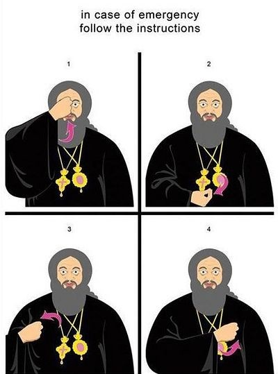

Libro de las Horas
de la Iglesia Ortodoxa Rusa
Traducido por Abadesa Juliana (Chile)
📑 Contenido
- Oración de la Mañana
- Oficio de Medianoche Diario
- Orden del Oficio de Medianoche del Sábado
- Orden del Oficio de Medianoche Dominical
- Oficio de Maitines
- Despedidas Especiales
- Oficio de Prima Hora
- Hora Tercia
- Hora Sexta
- Oficio de Typica o "Obendiza"
- Oficio de Servicio de Panagia
- Hora Novena
- Troparios y Kontaquios
📖 Prólogo
Cristiano, Hermano Mío: Al recibir este Libro de Horas en tus manos te darás cuenta que es una labor de un alma que desea demostrar toda la belleza y profundidad del Servicio Diario, de agradecimientos, alabanzas, peticiones y súplicas.
Surgió la idea de traducir al español para que las Niñas de mi Hogar participaran plenamente del Servicio Diario y para propagar la belleza de nuestra religión a los amigos y simpatizantes.
Se equivocan las personas que piensan que cantamos diariamente lo mismo. El gozo espiritual y la gracia que nos manda N.S.J.C. es personalizada, porque cada alma aún la más pecadora es creada a Imagen y Semejanza de Dios.
Cuando uno ama a otra persona trata de cumplir todos sus deseos, por muy difíciles que sean. Así también te pido, Oh mi Hermano Amante de Cristo Dios, entendiendo este libro, podrás tejer un hermoso diseño en el telar que te estoy ofreciendo y cumplirás la orden del Señor: "Rezar incesante".
📜 Prefacio al Libro de Horas
En el prefacio del Libro de las Horas en eslavo antiguo se dice, que la infancia es la primavera de nuestra vida, y que nuestra primera meta de conquista debe ser la palabra de Dios. Las oraciones que aprendemos quedan implantadas en nuestros seres durante la vida hasta la muerte.
Es imprescindible en nuestras vidas de cristianos ortodoxos el Libro de las Horas. Este libro contiene todas las operaciones diarias: salmos, oraciones de agradecimientos y peticiones que elevamos a Dios. Por tal motivo, acostumbrándonos aprendemos a leer y también a orar.
Con el uso de este libro oramos por nuestras necesidades, y también elevamos nuestras alabanzas al Todopoderoso, por todas las bendiciones recibidas.
De esta manera, el uso diario de este libro siembra en las almas jóvenes ese imprescindible recogimiento ante Dios, que es tan necesario para el cumplimiento de los deberes cristianos a lo largo de toda nuestra vida.
Con excepción de la Santa Liturgia, este Libro contiene todo el ciclo de los oficios y plegarias utilizadas diariamente por la Iglesia, y son Oficios de: Medianoche, Diario, Sábado y Dominical; Maitines: Prima (1ª hora), Tercia (3ª hora), Sexta (6ª hora); Típica Nona (Novena Hora); Vísperas, Completas: Mayores y Menores.
Oficio de Media Noche: Es un Oficio destinado a cumplirse a medianoche. Este oficio llama a los fieles a estar siempre preparados para el Gran Juicio Final.
Maitines: Oficio que se realiza en la mañana en agradecimiento a Dios por la pasada noche y pedir su Misericordia para el día venidero.
Prima: 1ª hora después de la salida del sol (alrededor 6 de la mañana).
Tercia: 3ª hora después de la salida del sol (8 de la mañana), recuerda el descenso del Espíritu Santo en los Apóstoles.
Sexta Hora: 6ª hora después de la salida del sol (11 de la mañana), recuerda la crucifixión de N.S.J.C.
Típica: Plegarias leídas cuando no se oficia la Divina Liturgia.
Nona: 9ª hora después de la salida del sol (2 de la tarde), recuerda la Pasión de N.S.J.C.
Vísperas: Oficio realizado al final del día (oficio de la tarde) en el que agradecemos a Dios por el día pasado.
Completas Mayores y Menores: Serie de oraciones en las que pedimos al Señor perdón por nuestros pecados, así como también por el descanso del alma y cuerpo para el sueño venidero.
Aparte de los oficios mencionados, el Libro de Horas contiene una serie de troparios, cánticos de alabanzas dedicados a grandes fiestas eclesiásticas y a los Santos Padres de la Iglesia.
✝️ Por la Señal de la Cruz
Para hacer la señal de la cruz debemos juntar los tres primeros dedos de la mano derecha (pulgar, índice y medio) y los otros dos (anular y meñique), se doblan hacia la palma.
Los tres primeros dedos nos demuestran nuestra fe en la Santísima Trinidad, Dios Padre, Dios Hijo y Dios Espíritu Santo.
Los dos dedos doblados, significan que el Hijo de Dios bajó a la tierra siendo Dios y se hizo hombre, demostrándonos sus dos naturalezas, la divina y la humana.
Al iniciar la señal de la cruz ponemos los tres dedos juntos en: la frente, para santificar nuestra mente; en el pecho para santificar nuestros sentimientos interiores; al hombro derecho y después al izquierdo, para santificar nuestras fuerzas corporales.
La señal de la cruz nos da fuerza para rechazar y vencer el mal. Tenemos que hacerlo correctamente, sin apuro, respetuosamente y conscientemente del acto que significa el persignarse.

En caso contrario estamos demostrando: falta de interés y negligencia al hacerlo, de esta manera sólo estamos logrando que los diablos se alegren por nuestra irreverencia.Debemos persignarnos: al iniciar, durante y al final de una oración; al reverenciar los iconos; al entrar y salir de la Iglesia; al besar la vivificante Cruz; también hay que hacerlo en los momentos críticos de nuestras vidas, en alegrías y pena, en dolor y congoja; antes y después de las comidas.
Cuando nos persignamos debemos hacerlo repitiendo mentalmente: "En el nombre del Padre, del Hijo y del Espíritu Santo. Amén." Así demostramos nuestra fe en la Santísima Trinidad. En nuestro deseo de vivir y trabajar para la gloria de Dios. La palabra Amén significa: "De verdad" o "Así sea."
🌅 Oración de la Mañana
Levántate de tu lecho, sin pereza y antes de empezar cualquier obra, colócate mentalmente en presencia del Creador y ora así:
En el nombre del Padre, del Hijo y del Espíritu Santo, Amén.
Luego permanece en silencio hasta que se tranquilicen todos tus sentimientos e inclínate tres veces, diciendo:
La oración del publicano: Señor Jesucristo, Hijo de Dios, ten piedad de mí, pecador.
Dios, ten piedad de mí, pecador.
Dios purifica mis pecados.
Tú que me criaste, oh Señor, apiádate de mí.
Sin fin he pecado, Señor perdóname.
Soberana mía, Santísima Virgen Deípara, sálvame a mí pecador.
Santo ángel de mi guarda, protégeme de todo mal.
Luego continúa así:
Señor Jesucristo, Hijo de Dios, por las oraciones de Tu Purísima Madre y de todos los Santos, apiádate de nosotros. Amén.
El servicio de la Mañana en la Iglesia empieza así:
Sac.: Bendito sea nuestro Dios, perpetuamente ahora y siempre y por los siglos de los siglos.
Lec.: Amén, Gloria a Ti, Nuestro Dios, gloria a Ti.
Oh, Rey Celestial, Paráclito, Espíritu de Verdad, que estás en todas partes y llenas todas las cosas, Tesoro de todo bien, y Dispensador en la Vida, ven y mora en nosotros, purifícanos de toda mancha y salva nuestras almas, Oh Bondadoso.
Santo Dios, Santo Fuerte, Santo Inmortal, ten piedad de nosotros (tres veces).
Gloria al Padre, al Hijo, y al Espíritu Santo, ahora y siempre y en los siglos de los siglos. Amén.
Oh, Santísima Trinidad, ten piedad de nosotros. Oh, Señor, perdona nuestros pecados. Oh, Soberano, absuelve nuestras transgresiones; Oh, Santo, mira y sana nuestras debilidades por Tu Nombre.
Señor, ten piedad (tres veces).
Gloria al Padre, al Hijo y al Espíritu Santo, ahora y siempre y en los siglos de los siglos. Amén.
Padre nuestro que estás en los cielos, santificado sea tu nombre, venga a nosotros tu Reino, hágase tu voluntad, como es en el cielo así en la tierra. El pan nuestro sustancial dánosle hoy, perdónanos nuestras deudas así como nosotros perdonamos a nuestros deudores, y no nos dejes caer en la tentación, mas líbranos del maligno.
Sac.: Porque Tuyo es el Reino, el Poder y la Gloria, Padre, Hijo y Espíritu Santo, ahora y siempre y por los siglos de los siglos. Amén.
Lec.: Amén.
Estos Troparios:
Al levantarnos acudimos a Ti, Oh Bondadoso y Te entonamos Oh Omnipotente el himno angelical. Santo, Santo, Santo eres Tú, Oh Dios, por la Deípara, ten piedad de nosotros.
Gloria al Padre, al Hijo y al Espíritu Santo.
Del lecho y del sueño me levantaste, Señor, ilumina mi espíritu y mi corazón y abre mis labios para que Te alabe, oh Santa Trinidad, diciéndote: Santo, Santo, Santo eres Tú, Oh Dios por la intercesión de la Dípara, ten piedad de nosotros.
Ahora y siempre y en los siglos de los siglos. Amén.
El supremo Juez vendrá de improviso y las obras de cada uno serán descubiertas, por eso en medio de la noche Te invocamos con temor, Santo, Santo, Santo eres Tú, Oh Dios, por tu Santa Madre ten piedad de nosotros.
Señor ten piedad (doce veces).
Al levantarme Te rindo gracias, Oh Santísima Trinidad, por no haber desencadenado Tu ira contra mí, pecador e indolente, en mérito de tu Bondad e infinita paciencia y por no haberme hecho perecer junto a mis iniquidades, sino que usando de Tu habitual misericordia, me hayas levantado de mi letargo para que pueda desde el alba glorificar tu grandeza. Y ahora Señor, ilumina mi inteligencia, abre mis labios para instruirme con tus Palabras, comprender tus Mandamientos, y hacer tu Voluntad y alabarte confesándote en mi corazón y glorificar tu Santísimo Nombre. Padre, Hijo, y Espíritu Santo, ahora y siempre y por los siglos de los siglos. Amén.
Otra Oración
Gloria a Ti, oh Rey Dios Omnipotente que por Tu divina y clemente providencia, me permitiste a mí, pecador e indigno levantarme del sueño y obtener la entrada a Tu santa casa. Recibe oh Señor la voz de mí súplica, como recibes de tus Santos noéticos fuerzas, y dígnate a recibir mis alabanzas aunque de labios corrompidos, pero de corazón puro y alma humilde, para que yo pueda con la lámpara reluciente de mi alma, ser acompañante de las sabias vírgenes y Te glorifico, en el Padre y Espíritu, oh glorificado, Dios-Palabra. Amén.
Venid inclinémonos al Rey nuestro Dios. (3 veces)
Salmo 50
Apiádate de mí, Oh Dios, según Tu gran misericordia, según la multitud de tus bondades, borra mi iniquidad. Lávame más y más de mi maldad, y límpiame de mi pecado, pues reconozco mis culpas, y mi pecado está siempre ante mí. Contra Ti sólo, he pecado, he hecho el mal en Tu presencia, por lo tanto, eres justo en Tu sentencia, soberano en Tu juicio. Considera que en maldad fui formado, y en pecado me concibió mi madre. Porque Tú amas la verdad; me descubriste los misterios profundos de Tu sabiduría. Rocíame con hisopo y seré puro; lávame y emblanqueceré más que la nieve. Hazme oír palabras de gozo y alegría, y mis huesos abatidos se estremecerán. Aparta Tu faz de mis pecados; y borra todas mis iniquidades. Crea en mí, Oh Dios, un corazón puro, y renueva dentro de mí un espíritu recto. No me arrojes de Tu presencia, y no quites de mí Tu Espíritu Santo. Devuélveme el gozo de Tu salvación, confírmame un espíritu generoso. Enseñaré a los impíos tus caminos, y los pecadores se convertirán a Ti. Líbranos de la sangre; Oh Dios, Dios de mi salvación y cantará mi lengua Tu justicia. Abre Señor mis labios, y cantará mi boca tus alabanzas. Si hubieras deseado sacrificios, en verdad Te los ofrecería, más no son los holocaustos los que Te placen. Sacrificio agradable a Dios es el alma arrepentida; al corazón contrito y humillado, Señor, Tú no los desprecias. Señor, en Tu bondad, trata benignamente a Sión, para que puedan reedificarse los muros de Jerusalén. Entonces aceptarás el sacrificio de justicia, las ofrendas y holocaustos, entonces se Te ofrecerán víctimas en Tu altar.
Credo
Creo en un solo Dios, Padre Omnipotente, Creador del cielo y de la tierra y de todas las cosas visibles e invisibles. Y en un solo Señor Jesucristo, Hijo Unigénito de Dios nacido del Padre, antes de todos los siglos; Luz de Luz; verdadero Dios de Dios verdadero. Engendrado no hecho; consubstancial al Padre, por Quien fueron hechas todas las cosas. Quien por nosotros los hombres y por nuestra salvación, bajó de los cielos y se encarnó del Espíritu Santo y María Virgen, y se hizo hombre. Fue crucificado también por nosotros bajo el poder de Poncio Pilatos, padeció, fue sepultado. Resucitó al tercer día según las Escrituras. Subió a los cielos y está sentado a la diestra del Padre. Y vendrá por segunda vez lleno de gloria a juzgar a los vivos y a los muertos y su Reino no tendrá fin. Y en el Espíritu Santo, Señor y Vivificador, que procede del Padre, que con el Padre y el Hijo es juntamente adorado y glorificado que habló por los profetas. Y en una Iglesia Santa Católica y Apostólica. Confieso un solo bautismo para la remisión de los pecados. Y espero la resurrección de los muertos y la vida del siglo venidero. Amén.
1ª Oración de San Macario el Grande
Oh Dios, purifícame, un pecador pues no he hecho nunca nada bueno en Tu presencia; líbrame del malvado, y ojalá Tú voluntad esté en mí, para que yo pueda abrir mis labios indignos sin condenación, y alabar Tu Santo Nombre de Padre, Hijo y Espíritu Santo, ahora y siempre y por los siglos de los siglos. Amén.
2ª Oración
Al despertar de mi sueño, Te ofrendo, Oh Salvador, el cantar de medianoche y me postro diciéndote: concédeme no dormirme para morir en pecado, al contrario apiádate de mí, Oh Tú que fuiste voluntariamente crucificado, y Te apresuras a levantarme que estoy postrado, rendido por la pereza, y me salvas por la oración e intercesión, y después del sueño de la noche, bendíceme con un día inmaculado y sálvame Oh Cristo, Dios.
3ª Oración
Al despertar de mi sueño me acerco precipitadamente a Ti, Oh Soberano, Amante de la humanidad, y por Tu bondad me esfuerzo por cumplir Tu obra, y Te suplico: ayúdame siempre, en todo, y líbrame de todo lo malo del mundo, del demonio, que me apura, sálvame y llévame a Tu Reino eterno. Porque Tú eres mi Creador, el Donador y Proveedor de todo lo bueno, y toda mi esperanza está en Ti, yo Te alabo, ahora y siempre y por los siglos de los siglos. Amén.
4ª Oración
Oh Señor, que me has hecho la gracia de tu gran bondad y de tu gran compasión a mí que soy Tu servidor, para que pase el transcurso de esta noche sin la tentación de ningún mal antagonista, Soberano y Creador de todo, por tu verdadera luz y con el corazón iluminado concédeme hacer Tu voluntad, ahora y siempre, y por los siglos de siglos. Amén.
5ª Oración
Todopoderoso Soberano, Dios nuestro, que recibe de tus Poderes Celestiales el himno tres veces sagrado, recibe también de mí, Tu indigno servidor, este breve poema de la noche y hazme la gracia para que todos los años de mi vida y todas las horas Te alabe a Ti, Padre, Hijo y Espíritu Santo, ahora y siempre y en los siglos de los siglos. Amén.
1ª Oración de San Basilio el Grande
Todopoderoso Señor, Dios de los poderes y de toda la carne, que vives en lo más alto y miras a los humildes, que escudriñas nuestros corazones y afectos, y sabes de antemano los secretos de los hombres; eterna e imperecedera luz, en Quien no hay cambio ni sombras de variación; Oh Rey Inmortal, recibe nuestras plegarias, Te las ofrecemos con labios impuros, confiando en Tus innumerables bendiciones. Perdónanos todos los pecados cometidos en pensamiento, palabra o acción, consciente e inconscientemente, y purifícanos de toda corrupción de la carne y el espíritu. Concédenos pasar la noche de la presente vida con el corazón alerta y pensamiento cuerdo, aguardando siempre el advenimiento del día radiante de la aparición de Tu único engendrado Hijo, Nuestro Señor y Dios y Salvador, Jesucristo, cuando el Juez de todos ha de venir en gloria a emitir sentencia a cada uno de acuerdo a sus actos. Ojalá no nos encuentre caídos en pecado ni ociosos, sino que despiertos y alertas para la acción, listos para acompañarlo en el divino palacio de sus aventuranzas, donde se oye un incesante sonido de los que acatan el festival y el inefable placer de los que contemplan la inexpresable belleza de su rostro. Porque Tú eres la verdadera luz que iluminas y santificas a todos, y toda la creación Te canta por los siglos de los siglos. Amén.
2ª Oración
Te bendecimos, oh Altísimo Dios y Señor de la misericordia. Que estás siempre realizando innumerables, grandes e inescrutables cosas con nosotros, gloriosas y maravillosas. Que nos permites dormir para tregua de nuestras debilidades y reposo de los agobios de nuestra fatigadísima carne. Te agradecemos que Tú no nos hayas destruido por nuestros pecados y por el contrario nos hayas amado como siempre y aunque estemos sumidos en la desesperación, Tú nos has levantado para alabar tu poder. En consecuencia, imploramos que en Tu incomparable bondad nos ilumines los ojos de nuestra comprensión y eleve nuestra mente del pesado sueño de la indolencia; abra nuestra boca y la colme con Tu alabanza, para que seamos capaces sin distraernos de cantarte y confesarnos a Ti, que eres Dios glorificado en todo y por todos, el Padre eterno, con Tu único engendrado Hijo, y Tú absolutamente santificado y bueno y vivificante Espíritu, ahora y siempre y por los siglos de los siglos. Amén.
Canción A La Santísima Madre De Dios
Yo le canto a Tu gracia, oh Soberana, y Te suplico honrar mi mente. Enséñame a caminar correctamente por la senda de los mandamientos de Jesucristo. Fortaléceme para mantenerme alerta en el cantar y desvanece el ensueño del desaliento. Libérame, trabado por las cadenas del pecado, Oh novia de Dios, por tus oraciones. Protégeme de noche y de día, y ahuyenta a mis enemigos que me derrotan. Oh Portadora de Dios, el Donador de la Vida, despabílame a mí que estoy amortecido por las pasiones. Oh Portadora de la luz inagotable, ilumina mi alma enceguecida. Oh Maravilloso Palacio de Jesucristo, hazme una casa del Espíritu Divino. Oh Madre del Curador, cura las perennes pasiones de mi alma. Guíame por la senda del arrepentimiento, pues estoy a merced de la tormenta de la vida. Redímeme del fuego eterno, de la guerra feroz y del tártaro. Desenmascárame como culpable pues lo soy de muchos pecados. Renuévame, envejecido por tantos pecados necios, Oh Inmaculadísima. Exhíbeme intacto de todos los tormentos, y ruega por mí ante el Ser Supremo de todos. Concédeme la gracia de recibir los goces del Cielo con todos los Santos. Oh Santísima Virgen, oye la voz de Tu inútil sirviente. Concédeme el raudal de las lágrimas, Oh Purísima, para purificar mi alma de la impureza. Te ofrezco los gemidos de mi corazón a Ti incesantemente. Esfuérzate por mí, Oh Soberana. Acepta mi servicio de súplica y ofréndaselo al Dios misericordioso. Oh Tú que estás por sobre los ángeles, álzame arriba de la confusión de este mundo. Oh Tabernáculo celestial Ostentación de Luz, dirige la gracia del Espíritu dentro de mí. Alzo mis manos y labios para alabarte, corrompidos como están por la impureza. Oh Inmaculadísima. Libérame de las maldades que corrompen el alma, e intercede fervorosamente ante Cristo, Quien merece honor con adoración, ahora y siempre, y por los siglos de los siglos. Amén.
Oración a Nuestro Jesucristo
Mi más misericordioso y clementísimo Dios, Señor Jesucristo, por tu gran amor Tú descendiste y cautivaste el género humano para salvarlos a todos. Y otra vez, Oh Salvador, sálvame por Tu gracia, Te lo suplico, pues si Tú me salvaras por mis obras, esto no sería gracia ni don, sino más bien un deber. En realidad, en Tu infinita compasión e indecible misericordia, Tú, Oh mi Cristo has dicho: quienquiera que crea en Mí vivirá y nunca morirá. Si la fe en Ti salva a los desesperados, sálvame, pues Tú eres mi Dios y creador. Atribúyelo a mi fe en vez de a mis actos. Oh mi Dios, porque Tú no encontrarás actos que pudieran justificarme, pero ojalá mi fe sea suficiente para todos mis actos. Ojalá que baste y se me absuelva, y ojalá me haga participante de Tu gloria eterna, y ojalá que Satán no me coja, Oh Palabra de Dios, y se jacte que me ha separado de Tu mano y rebaño. Oh Cristo, mi Salvador, quiéralo yo o no, sálvame. Apresúrate, rápido, rápido, pues perezco. Tú eres mi Dios desde las entrañas de mi madre. Concédeme, Oh Dios que Te ame ahora como alguna vez amé el pecado, y también que trabaje para Ti sin pereza, como trabajé antes para el engañoso Satán. Pero primordialmente trabajaré para Ti, mi Señor y Dios, Jesucristo, todos los días de mi vida, ahora y siempre, y por los siglos de los siglos. Amén.
Oración al Ángel Guardián de la Vida Humana
Oh Ángel Santo, intercede por mi alma despreciable y mi vida apasionada, no me abandones, ni me evadas por mi intemperancia. No des lugar a que el demonio insidioso me domine a causa de la violencia de mi cuerpo mortal. Fortalece mi pobre y débil mano y guíame por el camino de la salvación. Oh Ángel Santo de Dios, guardián y protector de mi cuerpo y de alma miserables, perdóname todos los insultos que Te he dirigido todos los días de mi vida, y por todos los pecados que pueda haber cometido durante la pasada noche. Protégeme durante el presente día, y escúdame de toda tentación del enemigo, para que no pueda airar a Dios por ningún pecado. Y ruega al Señor por mí, para que Él pueda fortalecerme en Su temor, y hacerme, Su esclavo, digno de Su bondad. Amén.
Oración a la Deípara (Virgen María, o Madre de Dios)
Mi Santísima Soberana, Deípara, por Tus santas y omnipotentes oraciones que destierren de mí, Tu humilde y despreciable servidor, el abatimiento, el olvido, la insensatez, la negligencia, y todos los pensamientos impuros, malignos e impíos de mi miserable corazón y de mi ofuscada mente. Y extingue la llama de mis pasiones, pues soy pobre y desdichado, y redímeme de mis numerosos crueles recuerdos y actos, y líbrame de todos sus nocivos efectos; pues bendita eres Tú por todas las generaciones, y glorificado sea Tu muy honorable nombre por los siglos de los siglos. Amén.
Bajo tu tierna compasión acudimos Virgen, Deípara, no rechaces nuestras plegarias en nuestro infortunio, sino que líbranos del mal, oh Única pura y bendita.
Gloriosísima siempre Virgen y Madre de Cristo Dios, presenta nuestras plegarias a Tu Hijo y nuestro Dios, rogándole para que salve, por Tu mediación, a nuestras almas.
Canción a la Deípara
Alégrate, Virgen María, Deípara, llena eres de gracia, El Señor es contigo, Bendita eres entre las mujeres, y bendito es el Fruto de Tu Vientre, porque has dado a luz al Salvador de nuestras almas. (tres veces).
Oración por Intercesión a las Huestes Angelicales
Oh Anfitriones angelicales y Celestiales de los Santos Ángeles y Arcángeles, rueguen por nosotros pecadores.
Oración por Intercesión a todos los Santos
Oh gloriosos Apóstoles, Profetas y Mártires, y todos los Santos, rogad por nosotros pecadores.
Invocación Piadosa al Santo Cuyo Nombre Llevamos
Ruega por mí, Santo(a) (nombre), pues con devoción acudo a Ti, rápido asistente e intercesor(a) de mi alma.
Digno es realmente bendecirte oh Deípara. Siempre bienaventurada e inmaculada y Madre de Dios. Oh más honorable que los querubines, e incomparablemente más gloriosa que los serafines, Tú que sin corrupción engendraste al Verbo Dios, verdaderamente eres la Deípara, Te magnificamos.
Gloria al Padre, al Hijo y al Espíritu Santo. Ahora y siempre por los siglos de los siglos. Amén. Señor, ten piedad. (tres veces).
En el nombre del Señor bendice padre, (si es Obispo), Soberano bendice.
Sac.: Por las oraciones de nuestros santos padres, Señor Jesucristo Hijo de Dios, ten piedad de nosotros. Amén.
Intercesión
Cada cristiano es obligado a rezar por su prójimo, por eso decimos las siguientes oraciones:
Oración a Nuestro Señor Jesucristo
Empieza siempre tus alabanzas con agradecimiento.
Señor Jesucristo, Hijo de Dios Te agradezco (postración)
Señor Jesucristo, Hijo de Dios ten piedad de los enfadados (postración)
Señor Jesucristo, Hijo de Dios ten piedad de mi prójimo (postración)
Señor Jesucristo, Hijo de Dios da descanso a los muertos (postración)
Señor Jesucristo, Hijo de Dios ten piedad de mí pecador (postración)
Señor Jesucristo, Hijo de Dios ayúdame en mi vida espiritual (postración)
Señor Jesucristo, Hijo de Dios ayúdame en mi vida cotidiana (postración)
🌙 Oficio de Medianoche Diario
Sac.: Bendito sea nuestro Dios perpetuamente ahora y siempre y por los siglos de los siglos.
Lec.: Amén, Gloria a Ti, Nuestro Dios, Gloria a Ti.
Oh, Rey Celestial, Paráclito, Espíritu de Verdad, que estás en todas partes y llenas todas las cosas, Tesoro de todo lo bueno, y Dispensador en la Vida, ven y mora en nosotros, purifícanos de toda mancha y salva nuestras almas, Oh Bondadoso.
Santo Dios, Santo Fuerte, Santo Inmortal, ten piedad de nosotros (tres veces)
Gloria al Padre, al Hijo, y al Espíritu Santo, ahora y siempre y por los siglos de los siglos. Amén.
Oh, Santísima Trinidad, ten piedad de nosotros. Oh, Señor, perdona nuestros pecados. Oh, Soberano, absuelve nuestras transgresiones, Oh, Santo, mira y sana nuestras debilidades por Tu Nombre.
Señor, ten piedad (tres veces)
Gloria al Padre, al Hijo y al Espíritu Santo, ahora y siempre y por los siglos de los siglos. Amén.
Padre nuestro que estás en los cielos, santificado sea tu nombre, venga a nosotros tu Reino, hágase tu voluntad, como es en el cielo así en la tierra. El pan nuestro sustancial dánosle hoy, perdónanos nuestras deudas así como nosotros perdonamos a nuestros deudores, y no nos dejes caer en la tentación, mas líbranos del maligno.
Sac.: Porque Tuyo es el Reino, el Poder y la gloria, Padre, Hijo y Espíritu Santo, ahora y siempre y por los siglos de los siglos.
Lec.: Amén.
Señor ten piedad (doce veces)
Gloria al Padre, al Hijo y al Espíritu Santo, ahora y siempre y por los siglos de los siglos. Amén.
Venid inclinémonos al Rey nuestro Dios. (3 veces)
Salmo 50
Apiádate de mí, Oh Dios, según Tu gran misericordia, según la multitud de tus bondades, borra mi iniquidad. Lávame más y más de mi maldad, y límpiame de mi pecado, pues reconozco mis culpas, y mi pecado está siempre ante mí. Contra Ti sólo, he pecado, he hecho el mal en Tu presencia, por lo tanto, eres justo en Tu sentencia, soberano en Tu juicio. Considera que en maldad fui formado, y en pecado me concibió mi madre. Porque Tú amas la verdad; me descubriste los misterios profundos de Tu sabiduría. Rocíame con hisopo y seré puro; lávame y emblanqueceré más que la nieve. Hazme oír palabras de gozo y alegría, y mis huesos abatidos se estremecerán. Aparta Tu faz de mis pecados; y borra todas mis iniquidades. Crea en mí, Oh Dios, un corazón puro, y renueva dentro de mí un espíritu recto. No me arrojes de Tu presencia, y no quites de mí Tu Espíritu Santo. Devuélveme el gozo de Tu salvación, confírmame un espíritu generoso. Enseñaré a los impíos tus caminos, y los pecadores se convertirán a Ti. Líbranos de la sangre; Oh Dios, Dios de mi salvación y cantará mi lengua Tu justicia. Abre Señor mis labios, y cantará mi boca tus alabanzas. Si hubieras deseado sacrificios, en verdad Te los ofrecería, más no son los holocaustos los que Te placen. Sacrificio agradable a Dios es el alma arrepentida; al corazón contrito y humillado, Señor, Tú no los desprecias. Señor, en Tu bondad, trata benignamente a Sión, para que puedan reedificarse los muros de Jerusalén. Entonces aceptarás el sacrificio de justicia, las ofrendas y holocaustos, entonces se Te ofrecerán víctimas en Tu altar.
Kathisma 17 - Salmo 118
I
Bienaventurados los que proceden sin mancilla, los que caminan según la ley del Señor. Bienaventurados los que examinan con cuidado los testimonios del Señor, los que le buscan de todo corazón. Porque los que cometen la maldad, no andan por los caminos del Señor. Tú ordenaste que se guarden exactamente tus mandamientos. Ojalá sean enderezados mis pasos a observar tus justísimas leyes. Entonces no será confundido, cuando tuviere fijos mis ojos en todos tus preceptos. Con sincero corazón Te alabaré, porque aprendí los juicios de Tu justicia. Observaré tus justos decretos, no me desampares jamás. Cómo enmendará el tierno joven su conducta, observando tus palabras. Yo Te he buscado con todo mi corazón, deposité tus palabras, para no pecar contra Ti. Bendito eres Tú, Oh Señor, enséñame tus justísimos preceptos. Ha anunciado mis labios todos los oráculos que han salido de Tu boca. Me he deleitado más que en todos los temores, en seguir el camino de tus preceptos. Yo contemplaré tus mandamientos, y consideraré tus leyes. Me deleitaré en tus preceptos, y no me olvidaré de tus palabras. Concede esta gracia a tus siervos y que viva y guarde tus palabras. Quita el velo de mis ojos y contemplaré las maravillas de Tu ley. Peregrino soy yo sobre la tierra, no me ocultes tus preceptos. Ardió mi alma en deseos de amar Tu justísima ley en todo tiempo. Tú aterraste a los soberbios, malditos aquellos que se desvían de tus mandamientos. Líbrame del oprobio y del desprecio; pues he guardado exactamente tus testimonios. Hasta los príncipes se pusieron de acuerdo para deliberar contra mí, mas Tu siervo contemplaba tus justísimos mandamientos. Porque tus decretos son la materia de mis meditaciones, y tus justas leyes mi consejo. Pegada está contra el suelo mi alma; vuélveme la vida según Tu palabra. Te expuse el estado de mi carrera, y me atendiste, amaéstrame en tus justísimas disposiciones. Enséñame el camino de la justicia y contemplaré tus maravillas. Adormecida de tedio el alma mía; comunícame vigor con tus palabras. Aléjame de la senda de la iniquidad, hasta la gracia que viva según la ley. He escogido el camino de la verdad; siempre tengo presente tus juicios. Me he apoyado, Señor, en los testimonios de Tu ley; no permitas que me vea confundido. Corrí por el camino de tus mandamientos; cuando Tú ensanchaste mi corazón. Dame, Oh Señor, por norma el camino de tus justísimos mandamientos; e iré siempre por él. Dame inteligencia; y estudiaré atentamente Tu ley, y la observaré con todo mi corazón. Guíame por la senda de tus preceptos; pues esa es la que deseo. Inclina mi corazón a tus testimonios; y no le dejes ir en pos de la codicia. Aparta mis ojos para que no miren la vanidad; haz que viva siguiendo Tu camino. Haz que Tu siervo se afirme en Tu palabra, por medio de Tu temor. Aparta de mí el oprobio que yo he temido; pues tus juicios son tan amables. Mira como estoy enamorado de tus mandamientos, hazme vivir conforme a Tu justicia. Y venga, Oh Señor sobre mí Tu misericordia; venga a mí Tu salvación, según Tu promesa. Y daré por respuesta a los que me zahieren; pues tengo puesta mi esperanza en tus promesas. Y nunca quites de mi boca la palabra de la verdad, ya que tanto he confiado en tus promesas. Por eso observaré siempre Tu ley, para siempre y por los siglos de los siglos. Yo caminaré con libertad y sosiego; porque busqué tus mandamientos. Y hablaré de tus testimonios delante de los reyes, y no me avergonzaré de ellos. Y me recrearé en tus preceptos, objeto de mi amor. Y alzaré mis manos hacia tus mandamientos, que he amado; meditaré tus justas disposiciones. Acuérdate de la promesa que hiciste a Tu siervo, con que me diste esperanza. Ella me consoló en medio de mi humillación; y Tu palabra me dio vida. Los soberbios me encarnecían hasta el extremo; pero yo no por eso me separé de Tu ley. Acuérdame, Oh Señor, de tus eternos juicios, y quedaré consolado. Desmayé de dolor, por causa de los pecadores que abandonaban Tu ley. En el lugar de mi destierro eran tus justísimos mandamientos el asunto de mis cánticos. Durante la noche me acordaba de Tu nombre, Oh Señor, y guardaba Tu ley. Tu favor he implorado de todo corazón; apiádate de mí, según Tu promesa. He examinado mi vida, y enderezado mis pasos a la observancia de tus mandamientos. Estoy resuelto, y nadie me arredrará de cumplir tus mandamientos. Los lazos de los pecadores me rodean por todas partes; mas yo no me olvido de Tu ley. A medianoche me levantaba a tributarte gracias por tus juicios llenos de justicia. Yo entro a la parte, con todos lo que Te temen y observan tus mandamientos. Llena está la tierra, Oh Señor, de tus piedades, amaéstrame en tus justísimos preceptos. Has usado la bondad, Oh Señor, con Tu siervo; según Tu promesa. Enséñame la bondad, la doctrina y la sabiduría; pues he creído tus preceptos. Antes de ser yo humillado, pequé, mas ahora obedezco Tu palabra. Eres bueno, instrúyeme, pues, por Tu bondad, en tus justísimas disposiciones. Los soberbios han forjado mil calumnias contra mí; pero con todo mi corazón guardaré tus mandamientos. Encrásose su corazón como leche cuajada; mas yo me ocupo en meditar Tu ley. Bien está que me hayas humillado, para que aprenda tus justísimos preceptos. Mejor es para mí la ley que salió de Tu boca, que millones de oro y plata.
Gloria al Padre, al Hijo y al Espíritu Santo, ahora y siempre y por los siglos de los siglos. Amén.
Aleluya, Aleluya, Aleluya, Gloria a Ti Oh Dios (tres veces)
Gloria al Padre..., ahora y siempre... Amén.
II
Tus manos me hicieron y me formaron; dame el entendimiento y aprenderé tus mandamientos. Viéranme los que Te temen, y se llenarán de gozo, porque puse toda mi esperanza en tus palabras. He conocido, Señor, que tus juicios son justísimos; conforme a Tu verdad me has humillado. Venga la misericordia tuya a consolarme, según la palabra que diste a Tu siervo. Vengan sobre mí tus piedades, y viviré; puesto que Tu ley es mi meditación. Confundidos sean los soberbios, por los inicuos atentados que han cometido contra mí; entretanto meditaré tus mandamientos. Reúnanse conmigo los que temen, y los que conocen tus testimonios. Haz que mi corazón se conserve puro en tus mandamientos, para que yo no quede confundido. Desfallece mi alma, suspirando por la salud que de Ti viene, mas yo he esperado firmemente en Tu palabra. Desfallecieron mis ojos de tanto esperar Tu promesa. Cuándo será que me consolarás. Porque yo me he quedado como un odre expuesto a la escarcha; mas no he olvidado tus justísimos preceptos. Cuántos son los días de Tu siervo. Cuándo harás justicia de mis perseguidores. Contáronme los impíos fábulas: Cuán diferente es todo esto de Ley. Todos tus preceptos son la verdad. Me han perseguido injustamente, socórreme. Poco faltó para que no dieran conmigo en la tierra; pero yo no abandoné tus preceptos. Vivifícame, según Tu misericordia; y observaré los mandamientos brotados de Tu boca. Eternamente, Oh Señor, permanece en los cielos Tu palabra. Tu verdad durará de generación en generación. Tú fundaste la tierra, y ella subsiste. En virtud de Tu ordenación continúa el curso de los días; pues todas las cosas Te sirven. De no haber sido Tu ley el objeto de mi meditación, hubiera sin duda perecido mi angustia. Nunca jamás olvidaré tus justísimas instituciones; pues me diste en ellas la vida. Tuyo soy yo, sálvame, pues he investigado con ansias tus mandamientos. Estuvieron los pecadores a la mira de mí para perderme; yo me dedique a estudiar tus oráculos. Tengo visto el fin de lo más perfecto y cumplido, sólo Tu ley no tiene ningún término ni medida. Cuán amable me es Tu ley, Oh Señor Todo el día es materia de mi meditación. Con Tu mandamiento me hiciste superior en prudencia a mis enemigos, porque le tengo perennemente ante mis ojos. Yo he comprendido más que todos mis maestros, porque tus mandamientos son mi meditación. Alcancé más que todos los ancianos, porque he ido investigando tus palabras. De tus estatutos no me he desviado, porque Tú me lo prescribiste por ley. Oh cuán dulces son a mi paladar tus palabras más que la miel a mi boca. De tus mandamientos saqué caudal de ciencias, por eso aborrezco toda senda de iniquidad. Tu palabra es como antorcha para mis pies, y luz para mi senda. Juré y ratifiqué el observar tus justísimos decretos. Abatido he sido, Señor, en gran manera, vivifícame según Tu promesa. Recibe, Oh Señor, con agrado los espontáneos sacrificios que Te ofrecen mis labios, y enséñame tus juicios. Tengo siempre mi alma en la mano, pero no me olvidé de Tu ley. Tendiéronme lazos los pecadores, pero yo salí del camino de tus mandamientos. He adquirido tus testimonios, para que sean eternamente mi patrimonio, pues son ellos la alegría de mi corazón. Incliné mi oración a la práctica perpetua de tus justísimos mandamientos por la esperanza del galardón. Aborrecí a los impíos, y amé Tu ley. Tú eres mi auxilio y amparo, y en Tu palabra tengo puesta toda mi esperanza. Retiraos de mí, malignos; yo me ocuparé en estudiar los mandamientos de mi Dios. Acógeme, según Tu promesa, y haz que yo viva, y no permitas que quede burlada mi esperanza. Ayúdame, y seré salvado, y meditaré continuamente tus justos decretos. Miras con desprecio a todos aquellos que se desvían de tus preceptos porque injusto es su modo de pensar. He llamado la atención, por incorrectos, a todos los pecadores de la tierra, por eso amé tus testimonios. Traspasa con Tu amor mis carnes, pues tus juicios me han llenado de espanto. He ejercido la rectitud y la justicia, no me abandones en poder de los calumniadores. Da la mano a Tu siervo para obrar el bien, no me opriman con calumnias los soberbios. Desfallecieron mis ojos, esperando me viniera de Ti la salvación, y el cumplimiento de Tu palabra. Trata a Tu siervo conforme Tu misericordia, y enséñame tus justísimos decretos. Siervo tuyo soy, dame inteligencia para que comprenda tus preceptos. Tiempo es, Oh Señor, de obrar; han echado por el suelo Tu ley. Por lo mismo he amado tus mandamientos más que el oro y los topacios. Por eso me encaminé por la senda de todos tus preceptos, y he detestado todos los caminos de la iniquidad. Admirables son tus testimonios, por eso los ha observado exactamente mi alma. La explicación de tus palabras ilumina y da inteligencia a los pequeñuelos. Abrí la boca, y respiré, porque estaba anhelando en pos de tus mandamientos.
Gloria al Padre..., ahora y... Amén.
Aleluya, Aleluya, Aleluya. Gloria a Ti Oh Dios. Tres veces
Señor, ten piedad. Tres veces
Gloria al Padre..., ahora y... Amén.
III
Vuelve hacia mí tus ojos y mírame con piedad, según sueles hacerlo con los que aman Tu nombre. Endereza mis pasos según la norma de tus palabras, y haz que no reine en mí injusticia ninguna. Líbrame de las calumnias de los hombres, para que yo cumpla tus mandamientos. Haz brillar sobre Tu siervo la luz de Tu rostro, y enséñame tus justísimos decretos. Arroyos de lágrimas han derramado mis ojos, por no haber observado Tu ley. Justo eres, Oh Señor, y rectos tus juicios. Recomendaste estrechamente la observancia de tus preceptos que son la misma justicia y verdad. Mi celo me ha hecho consumir de dolor, porque mis enemigos se han olvidado de tus palabras. Acendrada en extremo es Tu palabra, y está Tu siervo enamorado de ella. Pequeñuelo soy yo, y de poca estima, mas no he puesto en olvido tus justísimos oráculos. Tu justicia es eterna justicia, y Tu ley la verdad. Sorprendiéronme las tribulaciones y angustias; tus mandamientos son mi meditación. Llenos están de eterna justicia los testimonios de Tu ley; dame la inteligencia de ellos, y tendré vida. Clamé con todo mi corazón: escúchame, Oh Señor, y haz que yo vaya en pos de tus justísimos preceptos. A Ti clamé; sálvame, para que yo observe tus mandamientos. Me anticipé muy de mañana, porque esperé firmemente en tus palabras. Antes de amanecer dirigieron mis ojos hacia Ti para meditar Tu ley. Escucha, Señor, mi voz según Tu misericordia; y vivifícame conforme lo has prometido. Arrimáronse a la iniquidad mis perseguidores, y alejáronse de Tu ley. Cerca estás, Oh Señor, y todos tus caminos son la verdad. Desde el principio conocí que has establecido tus preceptos para que subsistan eternamente. Mira mi abatimiento, y líbrame; pues no me he olvidado de Tu ley. Sentencia Tú mi causa, y libérame, por respeto a Tu palabra vuélveme la vida. Lejos está de los pecadores la salvación, porque no han cuidado de tus justísimos preceptos. Tus misericordias Señor, son muchas; vivifícame según Tu promesa. Muchos son los que me persiguen y atribulan, pero yo no me he desviado de tus mandamientos. Veíalos prevaricar y me consumía el dolor; al ver que no hacían caso de tus palabras. Mira, Oh Señor, cuánto he amado tus mandamientos; por Tu misericordia otórgame la vida. El principio de tus palabras es la verdad; eternas son todas las disposiciones de Tu justicia. Sin causa ninguna me han perseguido los príncipes; mas mi corazón ha temido tus palabras. He de alegrarme en tus promesas, como quien encuentra en ellas ricos despojos. Aborrecí la injusticia, la detesté, y he amado Tu ley. Siete veces al día Te tributé alabanzas por los oráculos de Tu justicia. Gozan de suma paz los amadores de ley; sin que encuentren tropiezo alguno. Yo esperaba, Señor, la salud que viene de Ti, y amaba tus mandamientos. Mi alma ha guardado tus preceptos, y los ha amado ardientemente. He observado tus mandamientos y testimonios, porque todas mis acciones están presentes a tus ojos. Lleguen, Oh Señor, a Tu presencia mis plegarias, conforme a Tu promesa dame el entendimiento. Penetren mis ruegos hasta llegar ante Tu acatamiento, líbrame según Tu palabra. Rebosarán mis labios en himnos de alabanza, cuando Tú me enseñes tus justísimos oráculos. Mi lengua anunciará Tu palabra, porque todos tus preceptos son la equidad. Extiende Tu mano para salvarme, pues yo he preferido a todo tus mandamientos. Oh Señor, ardientemente he deseado la salud que de Ti viene, y Tu ley es el objeto de mi meditación. Vivirá mi alma, y Te alabará; y tus juicios serán mi apoyo. He andado errante como oveja descarriada; ven a buscar a Tu siervo, porque no me he olvidado de tus mandamientos.
Gloria al Padre, al Hijo y al Espíritu Santo, ahora y siempre... Amén.
Credo
Creo en un solo Dios, Padre Omnipotente, Creador del cielo y de la tierra y de todas las cosas visibles e invisibles. Y en un solo Señor Jesucristo, Hijo Unigénito de Dios nacido del Padre, antes de todos los siglos; luz de luz; verdadero Dios de Dios verdadero. Engendrado no hecho; consubstancial al Padre, por Quien fueron hechas todas las cosas. Quien por nosotros los hombres y para nuestra salvación, bajó de los cielos y se encarnó del Espíritu Santo y María Virgen, y se hizo hombre. Fue crucificado también para nosotros bajo el poder de Poncio Pilatos, padeció, fue sepultado. Resucitó al tercer día según las escrituras. Subió a los cielos y está sentado a la diestra del Padre. Y vendrá por segunda vez lleno de gloria a juzgar a los vivos y a los muertos y su Reino no tendrá fin. Y en el Espíritu Santo, Señor y Vivificador, que procede del Padre, que con el Padre y el Hijo es juntamente adorado y glorificado que habló por los profetas. Y en una Iglesia Santa Católica y Apostólica. Confieso un solo bautismo para la remisión de los pecados. Y espero la resurrección de los muertos y la vida del siglo venidero. Amén.
Trisagio: Santo Dios... más líbranos del malvado.
Sac.: Porque Tuyo es el Reino...
Lec.: Amén.
Los Troparios Tono 8
He aquí viene el Esposo a medianoche, bienaventurado el siervo que encuentra velando, mas, el que está inadvertido indigno es. Cuida alma mía de no caer en profundo sueño y ser arrojada fuera del Reino, y entregada a la muerte, más velad clamando: Santo, Santo, Santo eres Tú oh Dios, por la intercesión de la Deípara, ten piedad de nosotros.
Gloria al Padre, al Hijo y al Espíritu Santo.
Meditando en aquel día terrible, oh alma mía, vigila guardando Tu vela prendida y llénala con óleo, pues no sabes cuando Te llega la voz diciendo: he aquí viene el Esposo, por eso cuídate alma mía para no quedar dormida profundamente y quedarás afuera golpeando como las cinco vírgenes. Vigila para poder encontrar a Cristo con óleo copioso, y El Te concederá la divina gloria.
Ahora y siempre y por los siglos de los siglos. Amén.
Teotoquio: A Ti inexpugnable pared, confirmación de salvación, Virgen Deípara, Te suplicamos, destruyas los consejos de los adversarios, protege Tu ciudad (convento) aseguras la victoria de los ortodoxos cristianos, ruega por la paz del mundo, porque Tú, oh Deípara, eres nuestra esperanza.
Señor ten piedad (cuarenta veces)
Tú que en todo tiempo y a toda hora en el cielo y en la tierra eres adorado y glorificado, Cristo Dios muy paciente de gran piedad, muy benevolente, Tú que amas a los justos, y tienes misericordia de los pecadores, llamando a todos a la salvación, prometiendo los bienes futuros; Tú oh Señor, recibe en esta hora, nuestras súplicas, y dirige nuestras vidas en las sendas de tus mandamientos. Santifica nuestras almas, purifica nuestros cuerpos, guía nuestros pensamientos, purifica nuestras intenciones; líbranos de toda aflicción, maldad y dolencia; rodéanos con tus santos ángeles, para que con su poder seamos guiados y protegidos a fin de llegar a la unidad de la fe y al conocimiento de Tu inaccesible gloria, porque eres bendito y glorificado por los siglos de los siglos. Amén.
Señor ten piedad (tres veces)
Oh más honorable que los querubines e incomparablemente más gloriosa que los serafines, Tú que sin corrupción engendraste al Verbo-Dios, verdaderamente eres la Deípara, Te magnificamos.
Gloria al Padre... Ahora y siempre... Amén
En el nombre del Señor bendice Padre, (si es Obispo), Soberano bendice.
Sac.: Dios ten misericordia de nosotros y bendícenos, resplandece Tu rostro sobre nosotros y ten piedad de nosotros.
Oración de San Macario
Oh Soberano Dios, Padre Omnipotente, Oh Señor Hijo Unigénito Jesucristo y Espíritu Santo, una Divinidad y único Poder, ten piedad de mi pecador, sálvame, Tu indigno servidor, por los juicios que Tu conoces, pues eres bendito por los siglos de los siglos. Amén.
Venid inclinémonos al Rey nuestro Dios. (3 veces)
Salmo 120
Alcé mis ojos hacia los montes, de dónde me ha de venir el socorro. Mi socorro viene del Señor que crió el cielo y la tierra. No permitirá que resbalen tus pies; ni se adormecerá aquel que Te está guardando; no por cierto, no se adormecerá, ni dormirá el que guarda a Israel. El Señor es el que Te custodia: el Señor está a Tu lado para defenderte. Ni de día el sol Te quemará, ni de noche la luna. El Señor Te preservará de todo mal. Guardará el Señor Tu alma. El Señor Te guardará en todos los pasos de Tu vida, desde ahora y para siempre.
Salmo 133
Ea, pues, bendecid al Señor ahora, vosotros todos, oh siervos del Señor. Vosotros los que asistís en la casa del Señor, en los atrios del templo de nuestro Dios, levantad por las noches vuestras manos hacia el Santuario, y alabad al Señor. Bendígate desde Sión el Señor que crió el cielo y la tierra.
Gloria al Padre, al Hijo... ahora y siempre... Amén
Trisagio: Santo Dios... más líbranos del malvado.
Sac.: Porque Tuyo es el Reino, el Poder y la Gloria, Padre, Hijo y Espíritu Santo, ahora y siempre y por los siglos de los siglos.
Lec.: Amén
Tropario, tono 2: Acuérdate, oh Señor Bondadoso de todos Tus siervos y perdónales todos los pecados de su vida, pues fuera de Ti no hay ninguno exento del pecado, salvo Tú que puedes dar reposo a los difuntos.
Tú que de la profundidad de Tu Sabiduría provees todo por el amor al hombre, y concedes todo lo que ellos necesitan, oh Creador único, da descanso oh Señor a las almas de tus siervos; pues ellos pusieron su confianza en Ti, oh Nuestro Creador, Hacedor y Dios Nuestro.
Gloria al Padre, al Hijo, al Espíritu Santo.
Kontaquio, tono 6: Con los Santos concede, oh Cristo el reposo a las almas de tus siervos, donde no hay ni dolor, ni aflicción, ni gemido, sino vida eterna.
Ahora y siempre y por los siglos de los siglos. Amén.
Teotoquio: Todas las generaciones Te llamamos bendita, oh Virgen Deípara, porque en Ti había de engendrar el incontenible Cristo nuestro Dios. Bendito somos al tenerte como intercesora; día y noche Te rogamos por nosotros y que los cetros de los reinos sean fortalecidos por tus intercesiones. Por tanto, en himnos Te clamamos: Regocíjate, oh Tú que estás llena de gracia, el Señor es contigo.
Señor ten piedad (doce veces)
Oración:
Recuerda, oh Señor, a nuestros padres y hermanos que durmieron en la esperanza de la resurrección para la vida eterna y a todos aquellos que terminaron esta vida en la piedad y la fe y perdónales sus pecados que han cometido voluntaria o involuntariamente, de palabra, obra o pensamiento y colócalos en un lugar de luz, un lugar de frescor, un lugar de descanso, de donde toda enfermedad y aflicción son expulsadas y donde, desde la eternidad, brilla la luz de Tu semblante y alegra a todos tus santos; concédeles a ellos y a nosotros Tu reino y la participación en tus inefables bendiciones y el gozo de Tu eterna y bendita vida. Porque Tú eres la Vida y la Resurrección y el Descanso de Tus difuntos siervos, oh Cristo nuestro Dios y a Ti Te proclamamos la gloria, con Tu Padre Increado y Tu Espíritu Santo, bueno y Dador de vida, ahora y siempre, por los siglos de los siglos. Amén.
Gloriosísima siempre Virgen y Madre de Cristo Dios, presenta nuestras plegarias a Tu Hijo y nuestro Dios, rogándole para que salve, por Tu mediación, a nuestras almas.
Otra Oración de San Joanicio
El Padre es mi esperanza, el Hijo mi refugio el Espíritu Santo mi protección, oh Santísima Trinidad, gloria a Ti.
Gloria al Padre, al Hijo y al Espíritu Santo, ahora y siempre y por los siglos de los siglos. Amén.
Señor ten piedad (tres veces)
Bendice.
📅 Orden del Oficio de Medianoche del Sábado
Sac.: Bendito sea nuestro Dios perpetuamente, ahora y siempre y por los siglos de los siglos.
Lec.: Amén, Gloria a Ti, Nuestro Dios, Gloria a Ti.
Oh, Rey Celestial, Paráclito, Espíritu de Verdad, que estás en todas partes y llenas todas las cosas, Tesoro de todo lo bueno, y Dispensador en la vida, ven y mora en nosotros, purifícanos de toda mancha y salva nuestras almas, oh Bondadoso.
Santo Dios, Santo Fuerte, Santo Inmortal, ten piedad de nosotros (tres veces)
Gloria al Padre, al Hijo, y al Espíritu Santo, ahora y siempre y por los siglos de los siglos. Amén.
Oh, Santísima Trinidad, ten piedad de nosotros. Oh, Señor, perdona nuestros pecados. Oh Soberano, absuelve nuestras transgresiones, Oh, Santo, mira y sana nuestras debilidades por Tu Nombre.
Señor, ten piedad (tres veces). Gloria al Padre, al Hijo y al Espíritu Santo, ahora y siempre por los siglos de los siglos. Amén.
Padre nuestro que estás en los cielos, santificado sea tu nombre, venga a nosotros tu Reino, hágase tu voluntad, como es en el cielo así en la tierra. El pan nuestro sustancial dánosle hoy, perdónanos nuestras deudas así como nosotros perdonamos a nuestros deudores, y no nos dejes caer en la tentación, mas líbranos del maligno.
Sac.: Porque Tuyo es el Reino, el Poder y la Gloria, Padre, Hijo y Espíritu Santo, ahora y siempre y por los siglos de los siglos.
Lec.: Amén.
Señor ten piedad (doce veces)
Gloria al Padre al..., ahora y siempre... Amén.
Venid, inclinémonos al Rey, nuestro Dios. (3 veces)
Salmo 50
Apiádate de mí, Oh Dios, según Tu gran misericordia, según la multitud de tus bondades, borra mi iniquidad. Lávame más y más de mi maldad, y límpiame de mi pecado, pues reconozco mis culpas, y mi pecado está siempre ante mí. Contra Ti sólo, he pecado, he hecho el mal en Tu presencia, por lo tanto, eres justo en Tu sentencia, soberano en Tu juicio. Considera que en maldad fui formado, y en pecado me concibió mi madre. Porque Tú amas la verdad; me descubriste los misterios profundos de Tu sabiduría. Rocíame con hisopo y seré puro; lávame y emblanqueceré más que la nieve. Hazme oír palabras de gozo y alegría, y mis huesos abatidos se estremecerán. Aparta Tu faz de mis pecados; y borra todas mis iniquidades. Crea en mí, Oh Dios, un corazón puro, y renueva dentro de mí un espíritu recto. No me arrojes de Tu presencia, y no quites de mí Tu Espíritu Santo. Devuélveme el gozo de Tu salvación, confírmame un espíritu generoso. Enseñaré a los impíos tus caminos, y los pecadores se convertirán a Ti. Líbranos de la sangre; Oh Dios, Dios de mi salvación y cantará mi lengua Tu justicia. Abre Señor mis labios, y cantará mi boca tus alabanzas. Si hubieras deseado sacrificios, en verdad Te los ofrecería, más no son los holocaustos los que Te placen. Sacrificio agradable a Dios es el alma arrepentida; al corazón contrito y humillado, Señor, Tú no los desprecias. Señor, en Tu bondad, trata benignamente a Sión, para que puedan reedificarse los muros de Jerusalén. Entonces aceptarás el sacrificio de justicia, las ofrendas y holocaustos, entonces se Te ofrecerán víctimas en Tu altar.
Kathisma 9
Salmo 64
A Ti, oh Dios, son debidos los himnos en Sión, y a Ti se Te presentarán los votos en Jerusalén. Oye mi oración: a Ti vendrán todos los mortales. Prevalecieron en nosotros las maldades; pero Tú perdonarás nuestras impiedades. Dichoso aquel a quien Tú elegiste y allegaste a Ti: El habitará en Tu tabernáculo. Colmados seremos de los bienes de Tu casa: Santo es Tu Templo. Admirable por su justicia. Oye nuestras súplicas, oh Dios, Salvador nuestro, Tú que eres la esperanza de todas las naciones de la tierra y de las más remotas islas. Tú que das firmeza a los montes con Tu poder: Tú que armado de fortaleza conmueves lo más profundo de los mares, y haces sentir el estruendo de sus olas. Perturbáranse las naciones y quedarán llenos de pavor los habitantes de los últimos términos de la tierra, a vista de tus prodigios. Derramarás la alegría desde donde sale la mañana hasta donde termina la tarde. Tú visitaste la tierra y la has colmado de toda suerte de riquezas. El río de Dios está rebosando en aguas, has preparado el alimento: tal es la disposición de los campos. Hinche sus canales: multiplica sus producciones: con los suaves rocíos se regocijarán todas las plantas. Coronarás el año de Tu bondad, y serán fertilísimos sus campos. Se pondrán lozanas las praderas del desierto, y se vestirán de gala los collados. Se multiplicarán los rebaños de carneros y ovejas y abundarán en grano los valles. Alzarán su voz, y cantarán himnos de alabanza.
Salmo 65
Moradores todos de la tierra, dirigid a Dios voces de júbilo: Cantad salmos a su Nombre, tributadle gloriosas alabanza. Decid a Dios: ¡Oh cuan estupendas son, Señor, tus obras! A la fuerza de Tu gran poder recíranse a nada tus enemigos. Adórate toda la tierra, y Te celebre; cante salmos a Tu nombre. Venid a contemplar las obras de Dios, y cuán terribles son sus designios sobre los hijos de los hombres. El convirtió el mar en seca arena: pasaron el río a pie: allí nos alegramos en el Señor. El tiene por su poder un dominio eterno; sus ojos están fijos sobre las naciones, no se engrían en su interior los que le irritan. Bendecid, oh naciones, a nuestro Dios; y haced resonar las voces de su alabanza. El ha vuelto a mi alma la vida, y no ha dejado resbalar mis pies. Bien que Tú, oh Dios, has querido probarnos: nos has acrisolado al fuego como se acrisola la plata. Nos dejaste caer en el lazo: nos echaste las tribulaciones encima: a yugo de hombres nos sujetaste. Hemos pasado por el fuego y por el agua; mas nos has conducido a un lugar de refrigerio. Entraré en Tu templo a ofrecer holocaustos; y Te cumpliré mis votos, que claramente pronunciaron mis labios: mis votos que salieron de mi boca en el tiempo de mi tribulación. He de ofrecerte pingües holocaustos, haciendo subir hacia Ti el humo de los carneros: Te ofreceré bueyes y machos cabríos. Venid, y escuchad vosotros todos los que teméis a Dios, y os contaré cuán grandes cosas ha hecho el Señor por mi alma. Al Señor invoqué con mi boca, y le he glorificado con mi lengua. Si yo hubiera aprobado la iniquidad en mi corazón, no me escuchará el Señor. Por eso me ha oído Dios, y ha atendido a la voz de mis súplicas. Bendito sea Dios, que no desechó mi oración, ni retiró de mí su misericordia.
Salmo 66
Dios tenga misericordia de nosotros y nos bendiga: haga resplandecer sobre nosotros la luz de su rostro; y nos mire compasivo; para que conozcamos en la tierra Tu camino: y todas las naciones Tu salvación. Alábante, Dios, los pueblos: publiquen todos los pueblos tus alabanzas. Regocíjense, salten de gozo las naciones: porque Tú juzgas a los pueblos con justicia, y diriges las naciones sobre la tierra. Alábante, oh Dios, los pueblos; publiquen todos los pueblos tus alabanzas. Ha dado la tierra su fruto. Bendíganos Dios, el Dios nuestro, bendíganos Dios, y sea temido en todos los términos de la tierra.
Gloria al Padre, al Hijo y al Espíritu Santo, ahora y siempre y por los siglos de los siglos. Amén.
Aleluya, Aleluya, Aleluya, gloria a Ti oh Dios (tres veces). Señor ten piedad (tres veces). Gloria al Padre, al Hijo y al Espíritu Santo, ahora y siempre y por los siglos de los siglos. Amén.
Salmo 67
Levántense Dios, y sean disipados sus enemigos, y huyan de su presencia los que le aborrecen. Desaparezcan como el humo. Como se derrite la cera al calor del fuego, así perezcan los pecadores a la vista de Dios. Mas los justos celebren festines y regocijos en la presencia de Dios, y huélguense con alegría. Cantad a Dios; entonad salmos a su nombre: allanado el camino al que sube sobre el occidente. El Señor es el nombre suyo. Saltad de gozo en su presencia. Han de turbarse delante de El; que es el padre de los huérfanos y el juez de la ciudad. Reside Dios en su lugar santo. Dios que hace habitar dentro de una casa muchos de unas mismas costumbres: y que con fortaleza pone en libertad a los prisioneros, como también a los que le irritan, los cuales moran en los sepulcros. ¡Oh Dios! cuando salías al frente de Tu pueblo, cuando atravesabas el desierto, la tierra tembló, y hasta los cielos destilaron a la presencia de Dios: en el Sinaí a la presencia del Dios de Israel. ¡Oh Dios! Tú distribuirás una lluvia abundante y apacible a Tu heredad: ella se ha visto afligida; pero Tú la has recreado. En ella tendrán morada los que son de Tu grey: con Tu bondad, oh Dios, has provisto al pobre. El Señor dará palabras a los que anuncian con valor la buena nueva. Los reyes poderosos serán súbditos de su Hijo muy amado, y aquel que es la hermosura de la casa repartirá los despojos. Cuando dormiréis en medio de peligros, seréis como alas de paloma plateada, cuyas plumas por la espalda echan brillos de oro. Cuando el Celestial ejerza su juicio sobre los reyes de la tierra, quedarán más blancos que la nieve del monte Selmón. ¡Oh monte de Dios, monte féstil, monte cuajado, monte fecundo! Mas, ¿por qué andáis pensando en otros montes fértiles? Este es el monte donde Dios se complació en fijar su morada. Sí: en él morará el Señor perpetuamente. La carroza de Dios va acompañada de muchas decenas de millares de tropas, de millones que hacen fiesta. En medio de ellos está el Señor, en el Sinaí, en el lugar Santo. Ascendiste a lo alto: llevaste contigo a los cautivos: recibiste dones para los hombres; aun para aquellos que no creían que habitase el Señor entre nosotros. Bendito sea el Señor en toda la serie de los días: el Dios de nuestra salud nos concederá próspero viaje. Nuestro Dios es el Dios que puede salvarnos; y del Señor, y muy del Señor, es el librar de la muerte. Mas Dios quebrantará las cabezas de sus enemigos, el copete erizado de los que hacen pompa de sus delitos. Dijo el Señor: a los de Basán les haré volver las espaldas; he de arrojarlos a lo profundo del mar. Serán destrozados hasta teñirse tus pies en la sangre de tus enemigos; y han de lamerla las lenguas de tus mastines. Vieron, oh Dios, Tu entrada: la entrada de mi Dios, del Rey mío que reside en el Santuario. Iban delante los príncipes unidos a los que cantaban salmos, y en medio doncellitas tocando panderos. Oh vosotros, descendientes de Israel, bendecid al Señor Dios en vuestras asambleas. Allí se hallaba Benjamín el jovencito como estático: los jefes de Judá iban de guía; los jefes de Zabulón, los jefes de Neftalí. Muestra, oh Dios, Tu poderío: confirma, oh Dios, esta obra, que has hecho en nosotros. Porque respecto a Tu Templo en Jerusalén, ofrecérante don de los reyes. Reprime esas fieras que habitan en los cañaverales, esos pueblos reunidos, que, como toros dentro de la vacada, conspiran a echar fuera a los que han sido acrisolados como la plata. Disipa las naciones que quieren guerras. Egipto enviará embajadores; Etiopía se anticipará a rendirse a Dios. Cantad alabanzas a Dios, oh reinos de la tierra: load al Señor salmos. Cantadle salmos a Dios; el cual se elevó al más alto de los cielos, desde el Oriente. Sabed que hará que su voz sea una vez poderosa. Tributar gloria a Dios por lo que ha obrado en Israel: su magnificencia y su poder se elevan hasta las nubes. Admirable es Dios en sus santos; el Dios de Israel, él mismo dará virtud y fortaleza a su pueblo. Bendito sea Dios.
Gloria al Padre, al Hijo y al Espíritu Santo, ahora y siempre y por los siglos de los siglos. Amén.
Aleluya, Aleluya, Aleluya, gloria a Ti oh Dios (tres veces). Señor ten piedad (tres veces). Gloria al Padre, al Hijo y al Espíritu Santo, ahora y siempre y por los siglos de los siglos. Amén.
Salmo 68
Sálvame, oh Dios, porque las aguas han penetrado hasta mi alma. Atollado estoy en un profundísimo cieno, sin hallar donde afirmar el pie. Llegué a alta mar, y sumérjome la tempestad. Fatígueme en dar voces: secose la garganta: desfallecieron mis ojos, aguardando a mi Dios. Se han multiplicado, más que los cabellos de mi cabeza, los que me aborrecen injustamente. Se han hecho fuertes mis enemigos, los injustos perseguidores míos: he pagado lo que yo no había robado. Tú, oh Dios, sabes mi ignorancia, y los delitos que yo tenga no pueden ocultársete. No tengan que avergonzarse por mi causa aquellos que en Ti confían, oh Señor, Señor de los ejércitos. No queden corridos por causa mía los que van en pos de Ti, oh Dios de Israel. Pues por amor a Ti he sufrido los ultrajes, y se ve cubierto de confusión mi rostro. Mis propios hermanos, los hijos de mi misma madre, me han desconocido y tenido por extraño. Porque el celo de Tu casa me devoró, y los baldones de los que Te denostaban recayeron sobre mí. Afligíame con el ayuno, y se me convertía en afrenta: vestíame de silicio, y me hacía la fábula de ellos. Contra mí se declaraban los que tiene su asiento en la puerta: y los que bebían vino cantaban contra mi coplas: Mas yo entretanto, Señor, dirigía a Ti mi oración. Este es, oh Dios, el tiempo de reconciliación. Óyeme benigno según la grandeza de Tu misericordia, conforme Tu promesa fiel de salvarme. Sácame del cieno, para que no quede yo atascado en él: líbrame de aquellos que me aborrecen y del profundo de las aguas. No me anegue esta tempestad, ni me trague el abismo del mar, ni el pozo cierre sobre mi su boca. Óyeme, Señor, ya que tan benéfica es Tu misericordia: vuelve hacia mí tus ojos según la grandeza de tus piedades. Y no pierdas de vista a Tu siervo: oye presto mis súplicas, porque me veo atribulado. Mira por mi alma y líbrala: sácame a salvo por razón de mis enemigos. Bien ves los oprobios que sufro, y mi confusión, y la ignominia mía. Tienes ante tus ojos todos los que me atormentan: improperios y miserias aguarda mi corazón. Esperé que alguno se condoliese de mí, mas nadie lo hizo; o quien me consolase, y no hallé quien lo hiciese. Presentáronme hiel para alimento mío, y en medio de mi sed me dieron vinagre a beber. En justo pago conviértaseles su mesa en lazo de perdición y ruina. Obscurézcanse sus ojos para que no vean; y tráelos siempre agobiados. Derrama sobre ellos Tu ira, y alcánceles el furor de Tu cólera. Queda hecha un desierto su morada, y no haya quien habite en sus tiendas, ya que han perseguido a aquel que habías Tú herido, y aumentaron más y más el dolor de mis llagas. Tú permitirás que añadan pecados a pecados, y no acierten con Tu justicia. Raídos sean del libro de los vivientes, y no queden escritos con los justos. Yo soy un miserable y lleno de dolores; mas Tú, oh Dios, me has salvado. Alabaré con cánticos el nombre de Dios, y le ensalzaré con acciones de gracias: Lo que será más grato a Dios que si le inmolara un tornillo cuando le comienzan a salir las astas y las pezuñas. Vean los pobres, y consuélense. Buscad a Dios, y revivirá vuestro espíritu: puesto que el Señor oyó a los pobres, y no olvidó a los que están por él en cadenas. Alábenle los cielos y la tierra, el mar y cuanto en ellos se mueve. Porque Dios ha de salvar a Sión: y las ciudades de Judá serán reedificadas; y establecerán allí su morada, y adquiriéranlas como herencia. Y los descendientes de sus siervos las poseerán, y en ellas tendrán moradas aquellos que aman su Nombre.
Salmo 69
Oh, Dios, atiende a mi socorro: acude, Señor, luego a ayudarme. Corridos y avergonzados quedan los que me persiguen de muerte. Arrédrense y confúndanse los que se complacen en mis males. Sean puestos en vergonzosa fuga aquellos que me dicen: Bueno, bueno. Regocíjense y alégrense en ti todos los que Te buscan: y digan sin cesar los que aman a su Salvador: engrandecido sea el Señor. Yo por mí soy un menesteroso y pobre: ayúdame, oh Dios. Amparo mío y mi libertador eres Tú: oh Señor, no Te tardes.
Gloria al Padre, al Hijo y al Espíritu Santo, ahora y siempre y por los siglos de los siglos. Amén.
Credo
Creo en un solo Dios, Padre Omnipotente, Creador del cielo y de la tierra y de todas las cosas visibles e invisibles. Y en un solo Señor Jesucristo, Hijo Unigénito de Dios nacido del Padre, antes de todos los siglos; luz de luz; verdadero Dios de Dios verdadero. Engendrado no hecho; consubstancial al Padre, por Quien fueron hechas todas las cosas. Quien por nosotros los hombres y para nuestra salvación, bajó de los cielos y se encarnó del Espíritu Santo y María Virgen, y se hizo hombre. Fue crucificado también para nosotros bajo el poder de Poncio Pilatos, padeció, fue sepultado. Resucitó al tercer día según las escrituras. Subió a los cielos y está sentado a la diestra del Padre. Y vendrá por segunda vez lleno de gloria a juzgar a los vivos y a los muertos y su Reino no tendrá fin. Y en el Espíritu Santo, Señor y Vivificador, que procede del Padre, que con el Padre y el Hijo es juntamente adorado y glorificado que habló por los profetas. Y en una Iglesia Santa Católica y Apostólica. Confieso un solo bautismo para la remisión de los pecados. Y espero la resurrección de los muertos y la vida del siglo venidero. Amén.
Trisagio: Santo Dios... más líbranos del malvado.
Sac.: Porque Tuyo es el Reino...
Lec.: Amén.
Tropario, Tono 2:
Oh, Tú que eres por naturaleza increado, el Creador de todo, abres nuestros labios para que podamos proclamar Tu alabanza diciendo: Santo, Santo, Santo eres Tú, oh Dios por la intercesión de la Deípara, ten piedad de nosotros.
Gloria al Padre, al Hijo y al Espíritu Santo.
Imitando en la tierra a los poderes celestiales, Te ofrecemos, oh Bondadoso, la canción de triunfo: Santo, Santo, Santo eres oh Dios, por la Deípara, ten piedad de nosotros.
Ahora y siempre y por los siglos de los siglos. Amén.
Del lecho y del sueño me levantaste, Señor, ilumina mi espíritu y mi corazón y abre mis labios para que Te alabe, Oh Santa Trinidad, diciéndote: Santo. Santo, Santo eres Tú oh Dios por la Deípara, ten piedad de nosotros.
Señor ten piedad (cuarenta veces)
Tú que en todo tiempo y a toda hora en el cielo y en la tierra eres adorado y glorificado, Cristo Dios muy paciente, de gran piedad, muy benevolente, Tú que amas a los justos, y tienes misericordia de los pecadores, llamando a todos a la salvación, prometiendo los bienes futuros; Tú oh Señor, recibe en esta hora, nuestras súplicas y dirige nuestras vidas en las sendas de tus mandamientos. Santifica nuestras almas, purifica nuestros cuerpos, guía nuestros pensamientos, purifica nuestras intenciones; líbranos de toda aflicción, maldad y dolencia; rodéanos con tus Santos Ángeles, para que con Tu poder seamos guiados y protegidos a fin de llegar a la unidad de la fe y al conocimiento de Tu inaccesible gloria, porque eres bendito y glorificado por los siglos de los siglos. Amén.
Señor ten piedad (tres veces)
Gloria al Padre, al Hijo..., ahora y siempre y por los siglos de los siglos. Amén.
Oh más honorable que los querubines e incomparablemente más gloriosa que los serafines, Tú que sin corrupción engendraste al Verbo-Dios, verdaderamente eres la Deípara, Te magnificamos.
En el nombre del Señor bendice padre, (si es Obispo), Soberano bendice.
Sac.: Dios, ten misericordia de nosotros y bendícenos, resplandece Tu rostro sobre nosotros y ten piedad de nosotros.
Lec.: Amén.
Oh Soberano Dios, Padre Omnipotente, Oh Señor Hijo Unigénito Jesucristo y Espíritu Santo, una divinidad y único poder, ten piedad de mi pecador, sálvame, Tu indigno servidor, por los juicios que Tu conoces, pues eres bendito por los siglos de los siglos. Amén.
Oración de San Eustracio
Te magnifico, magnificándote, oh Señor, porque Tú observaste mi humildad y no me encerraste en manos de mis enemigos, sino que aliviaste mi alma de los deseos. Y ahora, oh Soberano, deja que Tu mano me proteja y permite que Tu misericordia caiga sobre mí, porque mi alma está aturdida y dolida ante su partida de éste, mi desdichado y corrupto cuerpo, para que el mal del adversario lo sobrecoja y lo desplace a la oscuridad por los pecados conocidos y desconocidos acumulados por mí en esta vida, apiádate de mí, oh Soberano, y no dejes que mi alma vea los oscuros rostros de los malos espíritus, pero permite que sea recibido por Tus brillantes y resplandecientes ángeles. Glorifica Tu Santo nombre, y por Tu poder sitúame ante Tu divino tribunal. Cuando se me juzgue, no sufriré porque la mano del príncipe de este mundo deba cogerme para no caer, un pecador, en las profundidades del hades, sino permanece junto a mí y ante mí un Salvador y Mediador, porque estos tormentos corporales regocijan a tus siervos. Ten piedad, oh Señor, de mi alma corrompida por las pasiones de esta vida y recíbela limpia por la penitencia y confesión, porque eres bendito por los siglos de los siglos. Amén.
Venid, inclinémonos al Rey nuestro Dios. (3 veces)
Salmo 120
Alcé mis ojos hacia los montes, de dónde me ha de venir el socorro. Mi socorro viene del Señor que crió el cielo y la tierra. No permitirá que resbalen tus pies; ni se adormecerá aquel que Te está guardando; no por cierto, no se adormecerá, ni dormirá el que guarda a Israel. El Señor es el que Te custodia: el Señor está a Tu lado para defenderte. Ni de día el sol Te quemará, ni de noche la luna. El Señor Te preservará de todo mal. Guardará el Señor Tu alma. El Señor Te guardará en todos los pasos de Tu vida, desde ahora y para siempre.
Salmo 133
Ea, pues, bendecid al Señor ahora, vosotros todos, oh siervos del Señor. Vosotros los que asistís en la casa del Señor, en los atrios del templo de nuestro Dios, levantad por las noches vuestras manos hacia el Santuario, y alabad al Señor. Bendígate desde Sión el Señor que crió el cielo y la tierra.
Gloria al Padre, al Hijo... ahora y siempre... Amén
Trisagio: Santo Dios... más líbranos del malvado.
Sac.: Porque Tuyo es el Reino, el Poder y la Gloria, Padre, Hijo y Espíritu Santo, ahora y siempre y por los siglos de los siglos.
Lec.: Amén
Tropario, tono 2: Acuérdate, oh Señor Bondadoso de todos Tus siervos y perdónales todos los pecados de su vida, pues fuera de Ti no hay ninguno exento del pecado, salvo Tú que puedes dar reposo a los difuntos.
Tú que de la profundidad de Tu Sabiduría provees todo por el amor al hombre, y concedes todo lo que ellos necesitan, oh Creador único, da descanso oh Señor a las almas de tus siervos; pues ellos pusieron su confianza en Ti, oh Nuestro Creador, Hacedor y Dios Nuestro.
Gloria al Padre, al Hijo, al Espíritu Santo.
Kontaquio, tono 6: Con los Santos concede, oh Cristo el reposo a las almas de tus siervos, donde no hay ni dolor, ni aflicción, ni gemido, sino vida eterna.
Ahora y siempre y por los siglos de los siglos. Amén.
Teotoquio: Todas las generaciones Te llamamos bendita, oh Virgen Deípara, porque en Ti había de engendrar el incontenible Cristo nuestro Dios. Bendito somos al tenerte como intercesora; día y noche Te rogamos por nosotros y que los cetros de los reinos sean fortalecidos por tus intercesiones. Por tanto, en himnos Te clamamos: Regocíjate, oh Tú que estás llena de gracia, el Señor es contigo.
Señor ten piedad (doce veces)
Oración:
Recuerda, oh Señor, a nuestros padres y hermanos que durmieron en la esperanza de la resurrección para la vida eterna y a todos aquellos que terminaron esta vida en la piedad y la fe y perdónales sus pecados que han cometido voluntaria o involuntariamente, de palabra, obra o pensamiento y colócalos en un lugar de luz, un lugar de frescor, un lugar de descanso, de donde toda enfermedad y aflicción son expulsadas y donde, desde la eternidad, brilla la luz de Tu semblante y alegra a todos tus santos; concédeles a ellos y a nosotros Tu reino y la participación en tus inefables bendiciones y el gozo de Tu eterna y bendita vida. Porque Tú eres la Vida y la Resurrección y el Descanso de Tus difuntos siervos, oh Cristo nuestro Dios y a Ti Te proclamamos la gloria, con Tu Padre Increado y Tu Espíritu Santo, bueno y Dador de vida, ahora y siempre, por los siglos de los siglos. Amén.
Gloriosísima siempre Virgen y Madre de Cristo Dios, presenta nuestras plegarias a Tu Hijo y nuestro Dios, rogándole para que salve, por Tu mediación, a nuestras almas.
Otra Oración de San Joanicio
El Padre es mi esperanza, el Hijo mi refugio el Espíritu Santo mi protección, oh Santísima Trinidad, gloria a Ti.
Coro: Gloria al Padre, al Hijo y al Espíritu Santo, ahora y siempre y por los siglos de los siglos. Amén.
Señor ten piedad (tres veces)
☀️ Orden del Oficio de Medianoche Dominical
Sac.: Bendito sea nuestro Dios perpetuamente, ahora y siempre y por los siglos de los siglos.
Lec.: Amén, Gloria a Ti, Nuestro Dios, Gloria a Ti.
Oh, Rey Celestial, Paráclito, Espíritu de Verdad, que estás en todas partes y llenas todas las cosas, Tesoro de todo lo bueno, y Dispensador en la vida, ven y mora en nosotros, purifícanos de toda mancha y salva nuestras almas, oh Bondadoso.
Santo Dios, Santo Fuerte, Santo Inmortal, ten piedad de nosotros (tres veces)
Gloria al Padre, al Hijo, y al Espíritu Santo, ahora y siempre y por los siglos de los siglos. Amén.
Oh, Santísima Trinidad, ten piedad de nosotros. Oh, Señor, perdona nuestros pecados. Oh Soberano, absuelve nuestras transgresiones, Oh, Santo, mira y sana nuestras debilidades por Tu Nombre.
Señor, ten piedad (tres veces). Gloria al Padre, al Hijo y al Espíritu Santo, ahora y siempre por los siglos de los siglos. Amén.
Padre nuestro que estás en los cielos, santificado sea tu nombre, venga a nosotros tu Reino, hágase tu voluntad, como es en el cielo así en la tierra. El pan nuestro sustancial dánosle hoy, perdónanos nuestras deudas así como nosotros perdonamos a nuestros deudores, y no nos dejes caer en la tentación, mas líbranos del maligno.
Sac.: Porque Tuyo es el Reino, el Poder y la Gloria, Padre, Hijo y Espíritu Santo, ahora y siempre y por los siglos de los siglos.
Lec.: Amén.
Señor ten piedad (doce veces)
Gloria al Padre al..., ahora y siempre... Amén.
Venid, inclinémonos al Rey, nuestro Dios. (3 veces)
Salmo 50
Apiádate de mí, Oh Dios, según Tu gran misericordia, según la multitud de tus bondades, borra mi iniquidad. Lávame más y más de mi maldad, y límpiame de mi pecado, pues reconozco mis culpas, y mi pecado está siempre ante mí. Contra Ti sólo, he pecado, he hecho el mal en Tu presencia, por lo tanto, eres justo en Tu sentencia, soberano en Tu juicio. Considera que en maldad fui formado, y en pecado me concibió mi madre. Porque Tú amas la verdad; me descubriste los misterios profundos de Tu sabiduría. Rocíame con hisopo y seré puro; lávame y emblanqueceré más que la nieve. Hazme oír palabras de gozo y alegría, y mis huesos abatidos se estremecerán. Aparta Tu faz de mis pecados; y borra todas mis iniquidades. Crea en mí, Oh Dios, un corazón puro, y renueva dentro de mí un espíritu recto. No me arrojes de Tu presencia, y no quites de mí Tu Espíritu Santo. Devuélveme el gozo de Tu salvación, confírmame un espíritu generoso. Enseñaré a los impíos tus caminos, y los pecadores se convertirán a Ti. Líbranos de la sangre; Oh Dios, Dios de mi salvación y cantará mi lengua Tu justicia. Abre Señor mis labios, y cantará mi boca tus alabanzas. Si hubieras deseado sacrificios, en verdad Te los ofrecería, más no son los holocaustos los que Te placen. Sacrificio agradable a Dios es el alma arrepentida; al corazón contrito y humillado, Señor, Tú no los desprecias. Señor, en Tu bondad, trata benignamente a Sión, para que puedan reedificarse los muros de Jerusalén. Entonces aceptarás el sacrificio de justicia, las ofrendas y holocaustos, entonces se Te ofrecerán víctimas en Tu altar.
El coro canta al final: ¡Digno es verdaderamente glorificarte oh Dios Verbo! Ante Quién tiemblan los Querubines y se estremecen. Glorificado por las huestes celestiales. Aquel que resucitó del sepulcro en el tercer día. Cristo, dador de vida, glorifiquémosle con temor.
Alabemos todos con alabanzas dignas de Dios, con cánticos divinos; al Padre, al Hijo y al Espíritu Divino; un poder en tres personas, un Reino y un solo Dios.
A quien todos los mortales de la tierra cantan, a quien glorifican las fuerzas celestiales, una naturaleza, tres personas, alabado en la fe por todos.
Oh Señor de los querubines, fuera de la comparación de los serafines, que eres Triuno, el principio de todo. A Ti Excelso Soberano Te magnificamos.
Me inclino delante del Padre y Dios sin inicio, junto con la palabra el Espíritu coigual sin inicio, honremos con cánticos, la única inseparable, tres unidades juntas.
Haz que tus rayos de luz me iluminen oh mi Dios en tres personas. Y muéstrame la morada de Tu inalcanzable gloria. Resplandeciente y lleno de luz e inmutabilidad.
Glorifiquemos con temor a Cristo. Dador de la vida, inefablemente encarnado de la Virgen ante quien tiemblan y se estremecen los Querubines y a quien glorifican los huéspedes angelicales.
Lec.: Trisagio... líbranos del malvado.
Sac.: Porque Tuyo es el Reino...
Lec.: Amén.
Hypakoy del Tono Dominical (según el tono de la semana)
Tono 1: El arrepentimiento del malhechor ha encontrado el paraíso y la lamentación de las Miróforas, proclamaron las alegres nuevas que Tú habías resucitado oh, Cristo Dios, concediendo al mundo gran misericordia.
Tono 2: Las mujeres que, después de la pasión, llegaron al sepulcro a ungir Tu cuerpo, oh, Cristo Dios, vieron a los ángeles en la sepultura y se atemorizaron, porque ellos revelaron la ascensión del Señor, concediendo al mundo gran misericordia.
Tono 3: Asombroso por su aparición, refrescante por su lenguaje, dijo el radiante ángel a las Miróforas; por qué buscan al Vivo en la tumba resucitado está él, que ha dejado el sepulcro; conózcanlo como el inmutable Eliminador de la corrupción; digan a Dios: Que maravillosas son tus obras, porque has salvado a la humanidad.
Tono 4: Concerniente a Tu glorioso despertar, oh Cristo, las Miróforas, que habían ido antes, proclamaron a los Apóstoles, que Tú habías resucitado, como Dios, concediendo al mundo gran misericordia.
Tono 5: Las Miróforas asombradas, llevando en su mente la visión del ángel y sus almas iluminadas por el divino despertar, anunciaron a los Apóstoles: proclamen entre las naciones la resurrección del Señor, quien obra maravillas y nos concede gran misericordia.
Tono 6: Habiendo destruido, con Tu muerte voluntaria y dadora de vida, las puertas del hades como Dios, nos has abierto el antiguo paraíso y habiendo resucitado de la muerte, has liberado nuestra vida de la corrupción.
Tono 7: Tú que adoptaste nuestra forma y soportaste la cruz corporalmente, sálvame por Tu resurrección, oh Cristo Dios, Tú que amas a la humanidad.
Tono 8: Las Miróforas, ante el sepulcro del dador de la vida, buscaron al Maestro, el Inmortal, entre los muertos y habiendo recibido del ángel la alegre noticia, anunciaron a los Apóstoles que Cristo Dios había resucitado, concediendo al mundo gran misericordia.
Señor ten piedad (cuarenta veces)
Gloria al Padre…
Oh más honorable….
En el nombre del Señor, bendice Padre o (Soberano bendice).
Sac.: Dios ten misericordia de nosotros y bendícenos, resplandece Tu rostro sobre nosotros y ten piedad de nosotros.
Lec.: Amén.
Sac.: Oh Omnipotente y Creador-vital de la Santísima Trinidad, el origen de la luz quien de Tu sola bondad dio existencia de la nada a toda la creación, ya sea de esta tierra o del firmamento, proveyéndolos y alimentándolo; quien, después de tus otros inefables beneficios que les prodigas, que nacen de la tierra, nos has dado además el arrepentimiento debido a nuestras debilidades corporales, incluso a la muerte: no nos abandones a nosotros infelices a morir en nuestras malvadas acciones, ni que el príncipe del mal, o el envidioso se conviertan en el hazmerreír del devastador. Porque Tú ves, oh, mi bondadoso Dios, la extensión de su calumnia y hostilidad, y el grado de nuestra vehemencia, debilidad y negligencia. Pero Te suplicamos para que Tu bondad inagotable sea revelada hacia nosotros, que todos los días y a toda hora, Te enfurecemos al quebrantar los preciados y vivificantes mandamientos, y nos exoneras y perdonas asimismo en todo lo que hemos pecado durante nuestra vida pasada, e incluso hasta la hora actual, en acción, palabras, pensamientos. Concédenos vivir el resto de nuestra vida en arrepentimiento, en contrición, y observando tus sagrados preceptos. Sí, seducidos por el placer, hemos pecado de diversas maneras, o nos hemos dejado engatusar por abominables deseos y hemos pasado el tiempo en inútiles y perniciosas lujurias; si, además impulsados por la ira y la furia irracional hemos ofendido a uno de nuestros hermanos; si por nuestra lengua nos hemos trabado a inevitables, fraudulentas o torcidas y fuertes asechanzas; si, por alguno de nuestros sentidos o por todos, voluntaria o involuntariamente, a sabiendas o inadvertidamente, mediante el engaño o la persuasión, hemos tambaleado torpemente; si, con malévolos y vanos pensamientos hemos corrompido nuestra conciencia; si, de alguna manera u otra hemos pecado, nos ha vencido el nefasto azar o nos hemos rendido ante el vicio, perdónanos y libéranos, oh Dios todo misericordioso, clemente y benevolente; y dadnos por el resto de nuestra vida, coraje y fortaleza, para que podamos llevar a cabo Tu digna, grata y perfecta voluntad, que habiendo, por la luz del arrepentimiento, abandonado el pecaminoso sendero de la noche y la oscuridad, y caminando honradamente como el día, podamos aparecer purificados, aunque indignos, gracias a Tu amor por la humanidad, cantándote y ensalzándote hasta la eternidad. Amén.
Sac.: Gloria a Ti nuestro Dios, nuestra Esperanza, Gloria a Ti.
Coro: Gloria al Padre..., ahora y siempre. Amén.
Señor ten piedad (tres veces)
Bendice Padre o (Soberano bendice).
Sac.: Cristo resucitado de entre los muertos nuestro verdadero Dios por las oraciones de su Purísima Madre de los Santos Ilustres Apóstoles de nuestro Padre (patrono de la Iglesia), tenga piedad de nosotros y nos salva porque es bueno y ama la humanidad.
Coro: Amén.
Sac.: Apiádate de nosotros oh Dios, según Tu gran misericordia, Te suplicamos, escúchanos y ten piedad.
Coro: Señor ten piedad (tres veces)
Sac: De nuevo rogamos por este sagrado monasterio (o ciudad), por cada monasterio, ciudad, aldea y cada país que sea reservada, de carestía, pestilencia, temblor de tierra, diluvio, fuego (incendio), espada, invasión de forasteros y guerra civil; para que nuestro bueno y amigo de la humanidad Dios, sea favorable y bondadoso, para que El pueda desviar su ira suscitada contra nosotros y libéranos de su justa amenaza que está amenazándonos y ten piedad de nosotros.
Coro: Señor ten piedad (cuarenta veces)
Sac.: Escúchanos oh Dios Salvador nuestro. Esperanza de todos los confines de la tierra; y de los que están lejos en el mar y sed compasivo oh Soberano con nuestros pecados y ten misericordia de nosotros. Porque eres un Dios misericordioso y amante de la humanidad, y a Ti Te glorificamos Padre, Hijo y Espíritu Santo. Ahora y siempre y por los siglos de los siglos.
Coro: Amén.
Sac.: Gloria a Ti, oh Cristo Dios, nuestra esperanza, gloria a Ti.
Coro: Gloria al Padre... ahora y siempre...
Señor ten piedad (tres veces). Si es Obispo — Soberano Bendice. Si no — (simplemente) Bendice.
Sac.: Cristo, nuestro verdadero Dios, por las intersecciones de su Madre, Purísima, de... (Nombre del patrono de la Iglesia...) N.N. y de todos los Santos, que tenga piedad de nosotros, nos salva, porque es bondadoso y ama la humanidad.
⛪ Oficio de Maitines
Cuando se celebran los maitines separadamente, el sacerdote abre la cortina de las puertas reales, toma y bendice el incensario y de pie con el incensario en la mano comienza, invocando con voz solemne:
Sac.: Bendito sea nuestro Dios, perpetuamente, ahora y siempre y por los siglos de los siglos.
Lec.: Amén.
El sacerdote comienza a incensar el Santuario, los Iconostasios, los coros, los fieles, y toda la Iglesia. El lector lee pausadamente mientras que el sacerdote termina de incensar:
Venid inclinémonos al Rey nuestro Dios. (3 veces)
Salmo 19
Oigate el Señor en el día de la angustia, protéjate el nombre de Dios de Jacob. Envíete socorro desde el Santuario, y desde Sión Te sostenga. Acuérdese de todas sus ofrendas y séalo grato Tu holocausto. Séanos dados ver gozosos Tu victoria, alzar el perdón en nombre de nuestro Dios. Otorgue el Señor todas sus peticiones. Ya conozco que el Señor dio la victoria a su Ungido que le escuchó desde su cielo santo, con la fortaleza de su diestra vencedora. Aquellos con los carros, y éstos con los caballos, más nosotros, con el nombre del Señor Dios nuestro somos fuertes, ellos resbalaron y cayeron, más nosotros levantamos y nos enhestamos, Señor, salva el Rey, y escúchanos el día que Te invocamos.
Salmo 20
Señor en Tu poder hallará el rey, su alegría y saltará de gozo la salvación que les ha enviado. Tú le has cumplido el deseo de su corazón, y no has frustrado los ruegos que formaron tus labios. Pues le previniste con faustas bendiciones, pusístele sobre la cabeza una corona de piedras preciosas. Te pidió vida, y Tú le has concedido alargar sus días por los siglos de los siglos. Grande es su gloria por la salvación que les ha dado, le revestirás de una gloria y esplendor. Porque Tú harás que sea él bendición eterna, colmárasle de gozo con mostrarle tu rostro. Por cuanto el rey tiene puesta su confianza en el Señor, por lo mismo descansará inconmovible en la misericordia del Altísimo. Alcance tus manos a todos los enemigos; descargue tu diestra sobre todos los que te aborrecen. Mostrándoles tu rostro harás de ellos como un horno encendido. Airado el Señor los pondrá en consternación, y el fuego los devorará. Exterminarás su prole de la tierra, y quitarás su raza de entre los hijos de los hombres. Porque urdieron contra Ti maldades; forjaron designios que no pudieron ejecutar. Tú, empero, lo pondrás en fuga y tendrás aparejadas contra ellos las flechas de tu arco. Ensálzate, Señor, con tu poder; que nosotros celebraremos con cánticos e himnos tu fortaleza.
Gloria al Padre..., ahora y siempre... Amén.
Trisagio: Santo Dios... más líbranos del malvado. Padre nuestro...
Sac.: Porque Tuyo es el reino, el poder y la gloria...
Lec.: Amén.
Troparios:
Salva oh Señor a Tu Pueblo, y bendice a Tu heredad. Concede Tu la victoria a los cristianos ortodoxos, sobre sus adversarios; y por el poder de Tu cruz preserva a todos los que pertenecen.
Gloria al Padre, al Hijo y al Espíritu Santo.
Oh Cristo, Dios Tú que voluntariamente fuiste levantado sobre la Cruz. Concede tu misericordia al pueblo nuevo llamado por Tu nombre. Alegra con Tu poder a los cristianos ortodoxos, concediéndoles victoria sobre sus adversarios, teniendo por auxilio Tu arma de paz, la victoria invencible.
Ahora y siempre... Amén.
Oh Madre de Dios, intercesora irrechazable, alabadísima y temeraria, no rechaces nuestras súplicas, oh bondadosa, más afirma el estado de los cristianos ortodoxos, y salva a los que ordenaste gobernar concediéndoles la victoria desde lo alto, porque engendraste a Dios, oh única bendita.
Letanía:
Sac.: Inciensa el altar y lee la siguiente letanía.
Apiádate de nosotros oh Dios, según Tu gran misericordia, Te suplicamos nos escuches y tengas piedad.
Coro: Señor ten piedad (tres veces)
Sac.: También roguemos por el Episcopado Ortodoxo (de la Iglesia Rusa), por el Metropolitano. N.N. Primer jerarca de la Iglesia en Exilio, Reverendo Arzobispo N.N. (y jefe de la diócesis).
Coro: Señor ten piedad (tres veces)
Sac.: También roguemos por todos los hermanos, y todos los piadosos Cristianos.
Coro: Señor ten piedad (tres veces)
Sac.: Porque eres un Dios misericordioso y amante de la humanidad y Te glorificamos Padre, Hijo y Espíritu Santo, ahora y siempre y por los siglos de los siglos.
Coro: Amén. En el nombre del Señor, bendice Padre.
El sacerdote trazando la señal de la cruz bendice con el incensario y dice en voz alta:
Gloria a la Santa Consubstancial, Vivificadora e Indivisible Trinidad, eternamente, ahora y siempre y por los siglos de los siglos.
Coro: Amén.
Los Seis Salmos
Lec.: Gloria a Dios en las alturas y paz en la tierra, a los hombres de buena voluntad (tres veces)
Señor, abre mis labios y mi boca cantará tus alabanzas (dos veces)
Salmo 3
Señor, cuan numerosos, son los que me atribulan, muchos se insurreccionan contra mí. Muchos son los que dicen de mí; no hay para él salvación en Dios. Mas Tú oh Señor, eres mi escudo, gloria mía, que levantas mi cabeza. Con mi voz clamé al Señor, y me escuchó desde su monte santo. Yo me acosté y me dormí y, me levanté, porque el Señor me sostiene. No temeré los millares del pueblo, que en derredor acampan contra mí. Levántate, Señor, ¡Sálvame, Dios mío! Porque Tú heriste a todos mis contrarios, rompiste los dientes de los pecadores. En el Señor está la salvación; venga Tu bendición sobre Tu pueblo.
Yo me acosté, me dormí y me levanté, porque el Señor me sostiene.
Salmo 37
Señor, no me reprendas en Tu furor, ni me castigues en Tu ira. Porque tus saetas descendieron entre mí, y sobre mí ha caído Tu mano. No hay sanidad en mi carne a causa de Tu ira; ni hay paz en mis huesos a causa de mi pecado. Porque mis iniquidades se han elevado sobre mi cabeza. Como carga pesada se han agravado sobre mí. Pudriéronse, corrompiéronse mis llagas. A causa de mi locura. Estoy encorvado, estoy humillado en gran manera, ando enlutado todo el día. Porque mis lomos están llenos de irritación. Y no hay sanidad en mi carne. Estoy debilitado y molido en gran manera; bramo a causa de la conmoción de mi corazón. Señor, delante de Ti están todos mis deseos; mi suspiro no Te es oculto. Mi corazón está acongojado, me ha dejado mi vigor, y aún la misma luz de mis ojos no está conmigo. Mis amigos y compañeros huyeron ante mi plaga. Y mis parientes se fueron lejos y los que buscaban mi alma armaron lazos; y los que procuraban mi mal hablaban iniquidades, meditaban fraudes todo el día, mas yo, como si fuera sordo no escuchaba; estaba como un mudo que no abre su boca. Fui pues como un hombre que no oye y que en su boca no tiene reprensiones. Porque en Ti tengo puesta, Señor, mi esperanza; Tú me oirás, oh Señor Dios mío. Pues yo dije: No triunfen de mí mis enemigos; los cuales cuando ven vacilantes mis pies se vanaglorian contra mí. Verdad es que yo estoy resignado para el castigo; y siempre tengo presente mi dolor. Yo confesaré mi iniquidad. Me acongojaré de mi pecado. Entre tanto mis enemigos viven y se han hecho más fuertes que yo. Se han multiplicado los que me aborrecen injustamente. Los que vuelven mal por bien murmuraban de mí, porque seguía la virtud. No me desampares, Señor Dios mío: no te apartes de mí, acude a socorrerme, oh Señor, de mi salvación. No me desampares, Señor Dios mío: no te apartes de mí, acude a socorrerme, oh Señor, de mi salvación.
Salmo 62
Dios, oh mi Dios, a Ti aspiro y me dirijo desde que apunta la aurora; de Ti está sedienta mi alma y mi cuerpo. En esta tierra desierta e intransitable y sin agua, pongo en tu presencia en el Santuario para contemplar tu poder y la gloria tuya. Más apreciable es que mil vidas tu misericordia, se ocuparán mis labios en tu alabanza. Te bendeciré toda mi vida, y alzaré mis manos invocando Tu Nombre. Quede mi alma bien llena, como de un manjar pingüe y jugoso y con labios alborozados te alabarán mis labios. Me acordaba de Ti en mi lecho; en Ti meditaba luego que amanecía, pues Tú eres mi amparo, y a la sombra de tus alas me regocijaré. Adherido a Ti está mi alma, me ha protegido tu diestra. En vano han buscado cómo quitarme la vida; entrarán en las cavernas profundas de la tierra. Entregados serán al filo de la espada, serán pasto de las raposas. Entre tanto el rey se regocijará en Dios; loados serán aquellos que le juran; porque quedó la boca tapada de todos los que hablaban inicuamente. Me acordaba de Ti en mi lecho; en Ti meditaba luego que amanecía, pues Tú eres mi amparo, y a las sombras de tus alas me regocijaré. Adherido a Ti está mi alma, me ha protegido Tu diestra.
Salmo 87
Señor Dios de mi salud, día y noche estoy clamando en Tu presencia, sea recibida mi oración en Tu presencia, presta oído a mi súplica, porque mi alma está harta de males, y mi alma se acerca al sepulcro. Ya me cuentan entre los muertos, he venido a ser como un hombre desamparado, como los acuchillados que yacen en los sepulcros, y de quienes no te acuerdes ya, como desechados de Tu mano. Me pusieron en un profundo calabozo, en lugares tenebrosos, entre las sombras de la muerte, sobre mi peso Tu furor, con todas Tus olas me abrumas. Alejaste de mí mis conocidos, me miraron como objeto de su abominación; cogido estoy, y no hallo salida, me flaquearon de miseria mis ojos. — A Ti clamé, oh Señor todo el día, hacia Ti tuve extendidas mis manos ¿Harás Tú por ventura milagros en favor de los finados?, ¿acaso los médicos los resucitarán para que Te alaben? Habrá tal vez alguno que en el sepulcro publique Tus misericordias, o desde la tumba Tu verdad. Conócense en las tinieblas Tus maravillas y Tu justicia en la región del olvido. Por eso yo clamo a Ti, oh Señor y de mañana llega a Ti mi oración, porqué oh Señor desecho mis ruegos, y me escondes Tu rostro. Pobre soy, y trabajo desde mi tierna edad, no bien fui ensalzado, cuando me vi humillado y abatido. Sobre mí ha recaído Tu ira y tus terrores me conturbaron. Inúndame estos cada día como avenidas de agua; me cercan todos juntos. Has alejado de mí al amigo, al pariente y al conocido por causa de mis desastres. Señor, Dios de mi salud día y noche estoy clamando en Tu presencia; sea recibida mi oración en Tu presencia, presta oído a mis súplicas.
Salmo 102
Bendice, alma mía, al Señor, y todas mis entrañas bendigan su Santo Nombre, bendice alma mía, al Señor y no olvides ninguno de sus beneficios. El perdona todas tus culpas. El sana todas tus dolencias. El rescata de la muerte Tu vida. El Te corona de gracia y misericordia. El sacia de bienes Tu vida; renuévase como el águila Tu juventud. El Señor practica la rectitud y a todos los oprimidos hace justicia. Dio a conocer sus caminos a Moisés, y a los hijos de Israel sus obras. Misericordioso y compasivo es el Señor, lento para la ira y lleno de clemencia, no contenderá perpetuamente, ni se enojará para siempre. No nos trata según nuestros pecados, ni según nuestras culpas, nos castiga. Pues cuanto se eleva el cielo sobre la tierra. Tanto prevalece su misericordia con los que le temen; cuanto dista el oriente de occidente, tanto aleja de nosotros nuestros delitos. Como se compadece un padre de sus hijos, se compadece el Señor de los que le temen. Porque El conoce de qué estamos formados, se acuerda que somos polvo. Los días del hombre son como el heno; y como la flor del campo así florece; apenas la tocó el viento, ya no existe, y su lugar ya no se conoce más. Mas la misericordia de Dios, permanece desde la eternidad y hasta la eternidad con los que le temen, y su protección hasta los hijos de los hijos, e los que conservan su alianza recuerdan sus preceptos para cumplirlos. El Señor afirmó en el cielo su trono, y su reino gobierna el universo. Bendecid al Señor todos sus ángeles, poderoso de fuerza, ejecutores de sus órdenes; para obedecer a su palabra. Bendecid al Señor, todos sus ejércitos, ministros suyos que hacéis su voluntad, bendecid al Señor, vosotros todas sus obras; en todos los lugares de su señorío, bendice mi alma al Señor. En todos los lugares de su señorío bendice Tú, oh alma mía al Señor.
Salmo 142
Oh Señor, oye mi oración, presta oídos a mi súplica según la verdad de tus promesas; óyeme por Tu misericordia. Mas no quieras entrar en juicio con Tu siervo; porque ningún viviente puede aparecer justo en Tu presencia. El enemigo ha perseguido mi alma abatida, tiene hasta el suelo mi vida. Me ha confinado en lugares tenebrosos, como a los que murieron hace ya un siglo. Mi espíritu padece terribles angustias; está mi corazón en zozobra. Acordéme de los días antiguos; púseme a meditar todas sus obras; ponderaba los efectos de Tu poder. Levanté mis manos hacia Ti; como tierra sedienta, así está por Ti suspirando mi alma. Óyeme luego, oh Señor, mi espíritu ha desfallecido. No retires de mí Tu rostro; para que no haya de contarme ya entre los muertos. Hazme sentir por la mañana Tu misericordia, pues en Ti he puesto mi esperanza, muéstrame el camino que debo seguir, ya que hacia Ti he levantado mi alma. Líbrame oh Señor de mis enemigos a Ti me acojo. Enséñame hacer Tu voluntad, pues Tú eres mi Dios; Tu espíritu bueno me conducirá a la tierra de la rectitud. Por amor de Tu nombre, oh Señor, me vivificarás, por Tu justicia, sacarás mi alma de la angustia, y por Tu misericordia disiparás a mis enemigos y destruyas a todos los que afligen mi alma, puesto que siervo tuyo soy. Respóndeme por tu justicia, mas no quieras entrar en juicio con tu siervo. (2 veces) Tu espíritu bueno me conducirá a la tierra de la rectitud.
Lec.: Gloria al Padre, al Hijo y al Espíritu Santo, ahora y siempre y por los siglos de los siglos, Aleluya, Aleluya, Aleluya, Gloria a Ti, Señor (tres veces)
Letanía
Sac.: En paz oremos al Señor.
Coro: Señor ten piedad.
Sac.: Por la paz que viene de lo alto y la salvación de nuestras almas, roguemos al Señor.
Coro: Señor ten piedad.
Sac.: Por la paz de todo el mundo y por el buen estado de las Santas Iglesias de Dios, para la unión de todos roguemos al Señor.
Coro: Señor ten piedad.
Sac.: Por este santo templo y por los que entran en él con fe, devoción y temor de Dios, roguemos al Señor.
Coro: Señor ten piedad.
Sac.: Por el Episcopado Ortodoxo de la Iglesia Rusa, por nuestro metropolitano N.N., primer Jerarca de la Iglesia en el extranjero, por nuestro Reverendísimo Arzobispo N.N., por el jefe de la Diócesis, por nuestros venerables sacerdotes, por nuestro Patriarca N.N., en Iglesias que tienen Patriarca, y diáconos en Cristo, por todo el clero y todo el pueblo, roguemos al Señor.
Coro: Señor ten piedad.
Sac.: Por el pueblo ruso, y los ortodoxos que están en el exilio, por su salvación, por la nación, por los fieles, autoridades que nos gobiernan, y por todo el ejército cristiano, roguemos al Señor.
Coro: Señor ten piedad.
Por esta ciudad, pueblo, (aldea o monasterio), por todas las ciudades y pueblos, y por los fieles que en ella habitan, roguemos al Señor.
Coro: Señor ten piedad.
Sac.: Por la salubridad de los aires, la abundancia de los frutos de la tierra, y tiempos de paz, roguemos al Señor.
Coro: Señor ten piedad.
Sac.: Por los que viajan por tierra, mar y aire, por los enfermos, los cautivos y por su salvación, roguemos al Señor.
Coro: Señor ten piedad.
Sac.: Para que nos liberes de toda aflicción, ira, peligro y necesidad, roguemos al Señor.
Coro: Señor ten piedad.
Sac.: Ampáranos, sálvanos, ten piedad y protégenos, oh Señor por Tu gracia.
Coro: Señor ten piedad.
Sac.: Conmemorando nuestra Santísima, Purísima, bendita y gloriosa Soberana, Deípara y siempre Virgen María, y a todos los santos, encomendémonos nosotros mismos mutuamente los unos a los otros y toda la vida a Cristo Dios.
Coro: A Ti Señor.
Sac.: Porque a Ti pertenece toda gloria, honor y adoración, Padre, Hijo y Espíritu Santo; ahora y siempre y por los siglos de los siglos.
Coro: Amén.
Dios el Señor
El Sacerdote en voz fuerte, alternando con el coro:
Sac.: Dios el Señor se ha revelado a nosotros; bendito es el que viene en nombre del Señor.
Sac.: Confesad al Señor porque es bueno, perdura su misericordia.
Coro: Dios el Señor se ha revelado a nosotros...
Sac.: Me rodearon y me asediaron, más en el nombre del Señor los destruiré.
Coro: Dios el Señor se ha revelado a nosotros...
Sac.: No moriré, más viviré y declararé las obras del Señor.
Coro: Dios el Señor se ha revelado a nosotros...
Sac.: La piedra que rechazaron los constructores, esa misma ha sido puesta por piedra angular del edificio. Esta es obra del Señor y es cosa maravillosa a nuestros ojos.
Himnos a la Trinidad (según el tono de la semana)
Primer Tono: Elevando nuestros pensamientos al pensamiento espiritual y por las semejanzas de tus Huestes Incorpóreos y recibiendo el resplandor de la Divinidad de los tres Hipostasea, cantamos como los querubines al Único Dios, Santo, Santo, Santo eres Dios nuestro...
Segundo Tono: Imitando en la tierra a los poderes celestiales, Te ofrecemos, oh, bondadoso, la canción de triunfo: Santo, Santo, Santo eres Tú oh Dios nuestro...
Tercer Tono: Oh, consubstancial e indivisible Trinidad, Trinitaria coexistente Unidad, a Ti como Dios cantamos el himno angelical: Santo, Santo, Santo eres, oh nuestro Dios...
Cuarto Tono: Osando ofrecer el himno de tus ministros noéticos, nosotros, los mortales, decimos: Santo, Santo eres, oh nuestro Dios...
Quinto Tono: Es el momento de la canción y la hora de la oración; fervientemente clamamos al único Dios: Santo, Santo, Santo eres Tú oh Dios nuestro...
Sexto Tono: Ante Ti están los querubines con temor y los serafines con admiración temerosa, ofreciendo con resonante voz el himno al Trisagio, con quienes nosotros, los pecadores, también cantamos: Santo, Santo, Santo eres Tú oh Dios nuestro...
Séptimo Tono: Oh, Tú que con el más alto poder eres alabado por los querubines y en la divina gloria eres adorado por los ángeles, acéptanos a nosotros que estamos en la tierra, quienes con indignos labios, Te enviamos alabanzas: Santo, Santo, Santo eres Tú oh Dios nuestro...
Octavo Tono: Elevando nuestros corazones al cielo, imitamos a los ejércitos angelicales y nos arrodillamos con temor ante el Juez, proclamando la victoriosa alabanza: Santo, Santo, Santo eres Tú oh Dios nuestro.
I Kathisma - Letanía Menor
Sac.: Una y otra vez, en paz roguemos al Señor.
Coro: Ampáranos y sálvanos, ten misericordia y protégenos, Oh Dios, por Tu gracia. Señor ten piedad.
Sac.: Conmemorando a nuestra santísima, purísima, bendita y gloriosa. Señora Madre de Dios y siempre virgen María, y a todos los santos, encomendémonos nosotros mismos y mutuamente los unos a los otros y toda nuestra vida a Cristo Dios.
Coro: A Ti, Señor.
Sac.: Porque a Ti pertenece la fuerza y Tuyo es el reino, el poder y la gloria. Padre, Hijo y Espíritu Santo, ahora y siempre y por los siglos de los siglos.
Coro: Amén.
Teotoquio (según el tono)
II Kathisma - Letanía Menor
Sac.: Una y otra vez, en paz roguemos al Señor.
Coro: Señor, ten piedad.
Sac.: Ampáranos y sálvanos, ten misericordia y protégenos, Oh Dios, por Tu gracia.
Coro: Señor, ten piedad.
Sac.: Porque Tú eres un Dios bueno y amante de la humanidad, y a Ti glorificamos Padre, Hijo y Espíritu Santo, ahora y siempre y por los siglos de los siglos.
Coro: Amén.
Salmo 135 (Polieleos)
Alabad el Nombre del Señor. Tributadle alabanzas, vosotros, siervos suyos. Aleluya, (tres veces)
Bendígase al Señor desde Sión, que habita en Jerusalén. Aleluya, (tres veces)
Confesad al Señor, porque es Bueno; porque es eterna su misericordia. Aleluya, (tres veces)
Confesad al Dios del cielo; porque El es bueno; es eterna su misericordia. Aleluya, (tres veces)
Los Graduales (según el tono)
Proquímeno del Tono
Oremos al Señor:
Sac: Oremos al Señor.
Coro: Señor, ten piedad.
Sac.: Porque Tú eres Santo, oh Dios nuestro y descansas entre los Santos, y a Ti glorificamos Padre, Hijo y Espíritu Santo, ahora y siempre y por los siglos de los siglos.
Coro: Amén.
Lectura del Santo Evangelio
Sac.: Empléese todo lo que respira en alabar al Señor.
Coro: Empléese todo lo que respira en alabar al Señor.
Sac.: Alabad al Señor en su Santo, alabadle en el firmamento de su poder.
Coro: Empléese todo lo que respira en alabar al Señor.
Sac.: Empléese todo lo que respira.
Coro: En alabar al Señor.
Sac.: Para que seamos dignos de escuchar el Santo Evangelio, pidamos a Dios el Señor.
Coro: Señor, ten piedad (tres veces)
Sac.: Sabiduría, estemos de pie, escuchemos el Santo Evangelio.
Sac.: La Paz sea con vosotros.
Coro: Y con Tu espíritu.
Sac.: Lectura del Santo Evangelio según San (el que corresponda)
Coro: Gloria a Ti Señor, gloria a Ti.
Sac.: Estemos atentos (se lee el Santo Evangelio)
Coro: Gloria a Ti, Señor, gloria a Ti.
Himno pascual: Habiendo visto la Resurrección de Cristo, postrémonos ante el Santo Señor, Jesús, el Único exento de pecado. Ante Tu Cruz nos inclinamos, oh Cristo, y cantamos y glorificamos Tu Santa Resurrección. Pues Tú eres nuestro Dios, y ningún otro conocemos y Tu Nombre invocamos. Venid todos los fieles, prosternémonos ante la Santa Resurrección de Cristo. Porque por la Cruz entró la alegría en el mundo entero. Bendiciendo siempre al Señor, cantamos Su Resurrección, habiendo padecido la cruz, destruyó la muerte con su muerte.
Gloria al Padre, al Hijo y al Espíritu Santo.
Por las oraciones de los Apóstoles, ¡oh misericordioso! purifica nuestros innumerables pecados.
Ahora y siempre y por los siglos de los siglos. Amén.
Por las oraciones de la Santísima Deípara, ¡oh misericordioso! purifica nuestros innumerables pecados.
Apiádate de mí, oh Dios, según Tu gran misericordia y según la multitud de tus bondades, borra mi iniquidad.
Resucitó del sepulcro Jesús, como había predicho, concediéndonos la Vida Eterna y la gran misericordia.
Salmo 50 - Oración de San Efrén el Sirio (en Cuaresma)
Sac.: Oh Dios, salva a Tu pueblo y bendice Tu heredad, visita a Tu pueblo con clemencia y compasión, acepta el estado de los cristianos ortodoxos y cólmanos con la riqueza de Tu misericordia. Por la intercesión y plegarias de nuestra Señora Inmaculada, Deípara y siempre Virgen María: por el poder de la Preciosa y Vivificadora Cruz: por la súplica de los incorpóreos poderes celestiales, del honorable y glorioso profeta, precursor de Cristo, Juan Bautista; de los santos gloriosos y alabados apóstoles; (si existe fiesta de un apóstol y evangelista, su nombre); de nuestros Santos Padres Teóforos, grandes Jerarcas y Doctores ecuménicos; Basilio el Magno, Gregorio el Teólogo y Juan Crisóstomo; de nuestro Padre entre los santos Nicolás, arzobispo de Mirra en Licia; el Taumaturgo; de nuestros Santos Padres Equi-Apóstol Metodio y Cirilo, evangelizadores de toda Rusia (eslavos); por el Justo Equi-Apóstol Gran Duque Vladimir y por los Metropolitanos de toda Rusia Pedro, Alejo, Jonás, Felipe, Macario, Demetrio, Mitrofanes, Ticón, Joasaf, Hermógenes, Pitirin, Inocente y Juan El Santo y Justo Juan Taumaturgo de Kronstadt, y de todos Tus Santos; Te rogamos, oh Misericordioso Señor, escúchanos a los pecadores, que Te suplicamos y apiádate de nosotros.
Coro: Señor ten piedad (doce veces)
Sac.: Por la misericordia, compasión y su amor a la humanidad y de Tu Hijo Unigénito, con quien estás bendito, con Tu Santo y Vivificante Espíritu ahora y siempre y por los siglos de los siglos.
Coro: Amén.
Canon (del Octotono o de la Fiesta)
Oda I - Cántico de Moisés (Éxodo 15:1-19)
Cantaremos al Señor, porque se ha magnificado. Arrojando al mar el caballo y su jinete. El Señor es mi ayudante y protector, y ha sido mi salvación. El es mi Dios, y lo alabaré. El Dios de mi padre, lo ensalzaré. El Señor es un guerrero, el Señor es su nombre. Precipitó en el mar los carros del Faraón y su ejército. Sus valientes se hundieron en el mar Rojo. Los abismos lo cubrieron. Hasta el fondo cayeron como piedra. Tu diestra oh Señor, ha quebrantado al enemigo. Y por el poder de Tu gloria derribas a tus adversarios. Tu ira los devora como fuego a la paja, por el soplo de Tu aliento retroceden las aguas. Y las olas se paran como murallas. Los torbellinos cuajan en medio del mar. Dijo el enemigo: los perseguiré y los alcanzaré y mi alma se saciará de ellos, sacaré mi espada, los destruirá mi mano. Mandaste Tu soplo y el mar los cubrió, y se hundieron como plomo en las aguas majestuosas. ¿Quién como Tú Señor entre los Dioses? ¿Quién como Tú glorioso y Santo, magnífico hacedor de milagros? Extendiste Tu mano y se los tragó la tierra, guiaste con amor al pueblo que rescataste. Lo llevas con Tu poder a Tu Santa morada. Lo oyeron los pueblos, y se turbaron. Se apoderará el dolor de la tierra de los Filisteos. Entonces los caudillos de Edón se turbarán, a los valientes de Moab les sobrecogerá temblor, se acobardarán todos. Caiga sobre ellos temblor y espanto; a la grandeza de Tu brazo enmudezcan como una piedra. Hasta que haya pasado Tu pueblo, Oh Señor, hasta que haya pasado este pueblo que Tú rescataste. Tú los introducirás y los plantarás en el monte de Tu heredad. En el Santuario que tus manos, oh Señor, han afirmado. En el lugar de Tu morada que Tú has preparado oh Señor. El Señor reinará eternamente y para siempre y cuando entró el Faraón cabalgando en su carro y su gente en el mar. Y el Señor hizo volver las aguas del mar sobre ellos, más los hijos de Israel pasaron en seco por entre medio del mar.
Gloria al Padre, al Hijo y al Espíritu Santo. Ahora y siempre por los siglos de los siglos. Amén.
Odas III, IV, V, VI, VII, VIII, IX (según el día de la semana)
Himno a la Virgen (Magnificat)
Sac.: Levantando el incensario dice: "A la Deípara y Madre de la Luz, engrandecemos con cánticos."
Coro: Magnificad con voz suave.
1. Mi alma engrandece al Señor y mi espíritu se regocija en Dios mi Salvador
Oh más Honorable que los Querubines, e Incomparablemente, más gloriosa que los Serafines, Tú que sin corrupción engendraste el Verbo Dios, verdaderamente eres la Deípara, Te Magnificamos.
2. Porque miro la humildad de su esclava, he aquí desde ahora me llamarán bienaventurada todas las generaciones.
Oh más honorable que los querubines...
3. Porque ha hecho en mí maravillas el Poderoso, es Santo su Nombre y su misericordia en generación a generación sobre los que le temen.
Oh más honorable que los Querubines...
4. Hizo desplegar el poder de su brazo y deshizo la mira de los soberbios de corazón.
Oh más honorable que los Querubines...
5. Derribó del solio a los poderosos, y ensalzó a los humildes. Colmó de bienes a los hambrientos y a los ricos se los despidió sin nada.
Oh más honorable que los Querubines...
6. Acordándose de su misericordia, acogió a Israel Su siervo, según la promesa que hizo a nuestros padres, a Abraham y su descendencia por los siglos de los siglos.
Oh más honorable que los Querubines...
Exapostilario (según el tono)
Laudes o Alabanzas (Salmos 148, 149, 150)
Empléese todo lo que respira en alabar al Señor, alabad al Señor del cielo, alabadle en las alturas. A Ti pertenecen las alabanzas, oh Dios.
Alabad al Señor desde los cielos, alabadlo en las alturas. A Ti Te pertenecen las alabanzas, oh Dios.
Alabadle todos los ángeles suyos, alabadle todas milicias suyas. A Ti Te pertenecen las alabanzas, oh Dios.
Alabadle, oh sol y luna; alabadle todas vosotras, lucientes estrellas. Alábele Tu oh cielo empíreo, y alaben el nombre del Señor todas las aguas que están sobre el firmamento.
Porque El habló y quedaron hechas las cosas; El mandó y quedaron criadas. Las estableció para que subsistiesen eternamente y por todos los siglos; fíjoles un orden que observarán siempre.
Alabad al señor vosotras criaturas de la tierra; monstruos del mar y vosotras todas, oh abismos, fuego, granizo, nieve, hielo, vientos procelosos, vosotros que ejecutáis sus órdenes; montes y collados todas, plantas fructíferas y todos vosotros oh cedros, bestias todas silvestres y domésticas, reptiles y volátiles, reyes de la tierra y pueblos; príncipes y jueces todos de la tierra; los jóvenes y las vírgenes, los ancianos y los niños, canten alabanzas al nombre del Señor; porque sólo el nombre del Señor digno de ser ensalzado. Su gloria resplandece sobre los cielos y la tierra; y él es que ha exaltado el poder de su pueblo. Himnos le canten todos sus Santos, los hijos de Israel, los pueblos que acercan a El.
Cantad al Señor un cántico nuevo; sus loores en la reunión de los santos beatos. Alégrese Israel en El que le crió, y regocíjense en su Rey los hijos de Sión. Celebren su nombre con armoniosos conciertos, y publiquen sus alabanzas al son del pandero y salterio. Porque el Señor ha mirado benignamente a su pueblo; y ha de exaltar a los humildes y salvarlos. Gozáranse los Santos en la gloria, y regocijarse han en su morada. Resonarán en sus bocas elogios de Dios; y vibrarán en sus manos espadas de dos filos, para ejecutar la venganza en las naciones y castigar a los pueblos. Para aprisionar con grillos a los reyes y con esposas de hierro a sus magnates. Para ejecutar en ellos el juicio decretado; gloria es ésta que está reservada para todos sus santos.
Alabad al Señor en sus Santos; alabadle en el firmamento de su poder. Alabadle por sus prodigios; alabadle por su inmensa grandeza. Alabadle al son de clarines; alabadle con el salterio y la cítara. Alabadle con panderos y armoniosos conciertos, alabadle con instrumentos músicos de cuerda y de viento. Alabadle con sonoros címbalos, alabadle con címbalos de júbilo. Empléese todo lo que respira en alabar al Señor.
Gran Doxología
Gloria a Dios en las alturas; y en la tierra paz y buena voluntad a los hombres. Te alabamos, Te bendecimos, inclinémonos ante Ti, Te glorificamos, Te damos gracias por Tu gran gloria, Señor, Rey Celestial, Dios Padre Omnipotente Señor, Hijo Unigénito Jesucristo y el Espíritu Santo, señor Dios cordero de Dios, Hijo del Padre, que quita los pecados del mundo, ten piedad de nosotros. Tú que quitas los pecados del mundo recibe nuestra oración. Tú que estás sentado a la diestra del Padre, apiádate de nosotros. Porque Tú sólo eres Santo, sólo Tú eres Señor Jesucristo en la gloria de Dios Padre. Amén.
Todos los días Te bendeciré y cantaré alabanzas a Tu nombre, por los siglos de los siglos.
Haznos dignos Señor guardarnos este día sin pecado, bendito eres Señor de nuestros padres, y alabado y glorificado sea Tu nombre eternamente. Amén.
Venga sobre nosotros Tu misericordia Señor, conforme esperamos a Ti.
Bendito eres Tú Señor, enséñame tus justísimos preceptos (tres veces)
Señor en todas las épocas has sido Tú nuestro amparo.
Dije: Señor apiádate de mí, sana mi alma, porque pequé contra Ti.
Oh Señor en Ti me acojo, enséñame a hacer Tu voluntad, pues Tú eres mi Dios, porque en Ti está el Manantial de la Vida y en Tu luz veremos la luz.
Extiende Tu misericordia sobre los que Te conocen.
Santo Dios, Santo Fuerte, Santo Inmortal, ten piedad de nosotros (3 veces)
Gloria al Padre, al Hijo y al Espíritu Santo. Santo Inmortal, ten piedad de nosotros.
Santo Dios, Santo Fuerte, Santo Inmortal, ten piedad de nosotros.
Tropario del día - Letanía - Despedida
Sac.: Letanía: Completemos nuestra oración matinal...
Sac.: Sabiduría.
Coro: Bendice.
Sac.: El que es bendito, Cristo nuestro Dios eternamente, ahora y siempre y por los siglos de los siglos.
Coro: Amén. Establece, oh Dios la santa fe de los ortodoxos cristianos, por los siglos de los siglos.
Sac.: Santísima Deípara, sálvanos.
Coro: Oh más honorable que los Querubines...
Sac.: Gloria a Ti Dios, nuestra esperanza, gloria a Ti.
Coro: Gloria..., ahora y siempre... Amén. Señor ten piedad (tres veces). Bendice.
Despedida
Sac.: Cristo, nuestro verdadero Dios, por las intercesiones de su Madre, Purísima, de... (Nombre del patrono de la Iglesia...) N.N. y de todos los Santos, que tenga piedad de nosotros, nos salva, porque es bondadoso y ama la humanidad.
🙏 Despedidas Especiales
Natividad de nuestro Señor Jesucristo
Cristo, nuestro verdadero Dios, nacido en una caverna y acunado en un pesebre, para nuestra salvación, por las oraciones de Su Purísima Madre, de los santos... y de todos los Santos, tenga piedad de nosotros y nos salve, porque es bueno y ama a la humanidad.
Circuncisión
Cristo, nuestro verdadero Dios, que Se dignó recibir al octavo día la circuncisión en Su carne, para nuestra salvación, por las oraciones...
Epifanía
Cristo, nuestro verdadero Dios, que Se dignó ser bautizado por San Juan Bautista en el Jordán, para nuestra salvación, por las oraciones...
Presentación de Cristo (2 de febrero)
Cristo, nuestro verdadero Dios, que permitió ser portado por los brazos del justo Simeón, para nuestra salvación, por las oraciones...
Transfiguración (6 de agosto)
Cristo, nuestro verdadero Dios, que Se transfiguró en el monte Tabor mostrando Su Gloria a sus santos Discípulos y Apóstoles, por las oraciones...
Domingo de Ramos
Cristo, nuestro verdadero Dios, que Se dignó sentarse en un pollino, para nuestra salvación, por las oraciones...
En las Vísperas del mismo Domingo:
Cristo, nuestro verdadero Dios, que fue a Su voluntaria Pasión para nuestra salvación, por las oraciones...
Jueves Santo
Cristo, nuestro verdadero Dios, que por Su extrema bondad nos indicó el mejor camino de humildad al lavar los pies de Sus Discípulos y se rebajó hasta la cruz y el sepulcro para nosotros, por las oraciones...
Despedida de la Santa Pasión
Cristo, nuestro verdadero Dios, que soportó las escupidas, los golpes, las bofetadas, la cruz y la muerte para la salvación del mundo, por las oraciones...
Viernes Santo
Cristo, nuestro verdadero Dios, que por nosotros los hombres y para nuestra salvación Se dignó soportar en Su carne la terrible Pasión, la cruz vivificadora y el entierro voluntario, por las oraciones...
Domingo de la Resurrección y toda la Semana de Pascua
Cristo, nuestro verdadero Dios, resucitado de entre los muertos, que venció la muerte por Su muerte y otorgó la vida a los que yacen en los sepulcros, por las oraciones...
Ascensión
Cristo, nuestro verdadero Dios, que en la gloria ascendió desde nosotros y está sentado a la diestra de Dios Padre, por las oraciones...
Pentecostés
Cristo, nuestro verdadero Dios, que bajo el aspecto de lenguas de fuego mandó desde el Cielo al Santísimo Espíritu sobre Sus santos Discípulos y Apóstoles, por las oraciones...
El mismo Domingo en las Vísperas
Cristo, nuestro verdadero Dios, que desde el Divino Seno de Su Padre se rebajó a descender del cielo a la tierra, adoptando toda nuestra naturaleza y deificándola, y que después de esto volvió a ascender a los cielos y está sentado a la diestra de Dios Padre, y que mandó sobre Sus santos Discípulos y Apóstoles al Divino, Santo, Consubstancial Espíritu, igual en naturaleza, en fuerza y en gloria, y con esto los iluminó a ellos y a todo el mundo, por las oraciones de Su Purísima, Inmaculada y Santísima Madre, de los santos, gloriosos, alabadísimos Apóstoles, predicadores de Dios y portadores de Espíritu Santo, y de todos los Santos, tenga piedad de nosotros y nos salve, porque es bueno y ama a la humanidad.
🕐 Oficio de Prima Hora (1ª hora)
Venid inclinémonos al Rey nuestro Dios. (3 veces)
Salmo 5
Presta oídos, Señor, a mis palabras: escucha mis clamores. Atiende a la voz de mis súplicas, Oh mi Rey y Dios mío. Porque a Ti enderezaré mi oración de mañana, Oh Señor, oirás mi voz. Al amanecer me pondré en Tu presencia, y Te contemplará. Porque no eres Tú un Dios que ame la iniquidad. Ni morirá junto a Ti el maligno, ni los injustos podrán pertenecer delante de tus ojos. Tú aborreces a todos los que obran la iniquidad, Tú perderás a todos aquellos que hablan mentiras. Al hombre sanguinario y fraudulento, el Señor le abominará. Pero yo confiado en la multitud de tus misericordias, entraré en Tu casa y en Tu temor, doblaré mis rodillas ante Tu santo templo. Guíame, Oh Señor, en Tu justicia endereza tus ojos mi camino, por causa de mis enemigos. Porque en su boca no hay rectitud, su corazón está lleno de vanidades y perfidia su garganta es un sepulcro abierto, con sus lenguas se lisonjearán. Júzgalos, Oh Dios mío. Frústrense sus designios, arrójalos fuera, lejos de Tu presencia como lo merecen sus muchas impiedades, puesto que, Oh Señor, Te han irritado. Y han de alegrarse todos aquellos que en Ti confían, se regocijarán eternamente, y Tú morirás en ellos. Y en Ti se gloriarán todos los que aman Tu Nombre. Porque Tú bendecirás al justo, Señor con Tu benevolencia, como un escudo nos has coronado.
Salmo 89
Señor, Tú has sido refugio de generación en generación. Tú, Oh Dios eres de antes que nacieran los montes y se formara la tierra y el universo, y desde el siglo hasta los siglos. No reduzcas el hombre al abatimiento, pues dijiste: Convertios Oh Hijos de los hombres. Porque mil años delante de tus ojos, son como el día de ayer que pasó y como una de las vigilias de la noche. Una nada son todos los años que vive. Dura un día como el heno, florece por la mañana y se pasa por la tarde inclina la cabeza, se deshoja y se seca. Al ardor de Tu ira hemos desfallecido y con Tu furor quedamos conturbados. Has colocado nuestras iniquidades delante de tus ojos, y nuestros terros alrededor de Tu rostro. Por eso nuestros días se han desvanecido, y nosotros venimos a fallecer por Tu enojo. Como una tela de araña serán sepultados nuestros años. Sesenta años son los días de nuestra vida. Cuando más ochenta años en los muy robustos, lo que pasa de aquí achaques y dolencias, según esto seremos arrebatados, ¿quién conoce la grandeza de Tu ira?, y Tu indignación según debes ser tímido. Danos a conocer Tu diestra, y concédenos un corazón instruido en sabiduría. Vuélvete, oh Señor, hasta cuándo y aplácate con tus siervos. Sácianos pronto, oh Señor de Tu misericordia y nos regocijaremos y recrearemos todos los días de nuestras vidas. Alégranos, confórtame a los días que nos humillaste, por los años que sufrimos miseria. Vuelva los ojos hacia tus siervos a estas tus obras y dirige Tú a sus hijos. Y resplandezca sobre nosotros la luz, Señor Dios nuestro, y endereza en nosotros las obras de nuestras manos, y da buen éxito a nuestras obras.
Salmo 100
Cantaré, Señor las alabanzas de Tu misericordia y de Tu justicia. Estudiaré el camino de la perfección cuando vengas a mí. He vivido con inocencia de corazón en medio de mi casa. No pondré delante de mis ojos cosa injusta, he aborrecido a los transgresores de la ley. Conmigo no han tenido cabida hombre de corazón depravado, no he querido conocer al que con su proceder maligno se desviaba de mí. Al que calumniaba secretamente a su prójimo, a este le ha perseguido, no admitía en mi mesa a hombres de ojos altaneros y de corazón insaciable. Dirigir mi vista en busca de los hombres fieles al país, para que habiten conmigo. El que anduviere en el camino de la perfección, este me servirá. No morará en mi casa el que obra con soberbia, ni hallará gracias en mis ojos que habla mentiras. Por la mañana extermino a todos los pecadores del mundo, para extirpar de la ciudad del Señor a todos los facinerosos.
Gloria al Padre, al Hijo y al Espíritu Santo ahora y siempre y por los siglos de los siglos. Amén.
Aleluya, Aleluya, Aleluya gloría a Ti oh Dios (Tres veces)
Señor ten piedad (Tres veces)
Gloria al Padre, al Hijo y al Espíritu Santo.
Tropario del día del Santo.
Ahora y siempre y por los siglos de los siglos. Amén.
¿Cómo Te llamaremos oh llena de gracia? Cielo, porque hiciste resplandecer el sol de justicia. Paraíso porque hiciste brotar para nosotros la flor inmarcesible, Virgen, pues permaneciste incorrupta. Madre purísima, pues en tus brazos llevaste un Hijo que es el Dios de todos. Intercede ante El por la salvación de nuestras almas.
Kontaquio del Santo del día o de la fiesta.
Señor ten piedad (cuarenta veces)
Tú que en todo tiempo y a toda hora en el cielo y en la tierra eres adorado y glorificado Cristo Dios muy paciente, de gran piedad, muy benevolente, Tú que amas a los justos y tiene misericordia de los pecadores, llamando a todos a la salvación, prometiendo los bienes futuros; Tú, oh Señor, recibe en esta hora, nuestras súplicas, y dirige nuestras vidas en las sendas de tus mandamientos. Santifica nuestras almas, purifica nuestros cuerpos, guía nuestros pensamientos, purifica nuestras intenciones; líbranos de toda aflicción, maldad y dolencia; rodéanos con tus santos ángeles, para que con su poder seamos guiados y protegidos a fin de llegar a la unidad de la fe y al conocimiento de Tu inaccesible gloria, porque eres bendito y glorificado por los siglos de los siglos. Amén.
Señor ten piedad. (Tres veces)
Gloria al Padre, al Hijo y al Espíritu Santo, ahora y siempre y por los siglos de los siglos. Amén.
Oh más honorable que los querubines e incomparablemente más gloriosa que los serafines, Tú que sin corrupción engendraste al Verbo-Dios, verdaderamente eres la Deípara, Te magnificamos.
En el nombre del Señor; Bendice Padre.
Sac.: Que Dios tenga compasión de nosotros y nos bendiga, que resplandezca su rostro sobre nosotros y nos tenga misericordia.
Lec.: Amén.
Sac.: Cristo, Luz Verdadera que iluminas y Santificas a cada persona que viene al mundo. Que sea una señal sobre nosotros la luz de Tu rostro. Que en ella podamos ver la luz inaccesible. Dirige nuestros pasos en el cumplimiento de tus mandamientos, por las intercesiones de Tu purísima Madre y de todos tus Santos. Amén.
Coro: Yo Tu ciudad o Deípara, Te canto canción de triunfo, Oh guerrera y defensora. Y Te presento el agradecimiento Oh libradora de los apuros y como Tú eres invencible, líbrame de las múltiples desgracias para exclamarte: Regocíjate, Oh novia no desposada.
Gloria al Padre, al Hijo y al Espíritu Santo, ahora y siempre y por los siglos de los siglos. Amén.
Señor ten piedad (tres veces)
Bendice.
Sac.: Dimisión (Apolysis).
Coro: Amén. Señor ten piedad (tres veces)
🕒 Hora Tercia (3ª hora)
Sac.: Bendito sea nuestro Dios...
Lec.: Amén; Gloria a Ti Dios nuestro, Gloria a Ti
Oh Rey Celestial paráclito Espíritu de verdad, que estás en todas partes y llenas todas las cosas, tesoro de todo lo bueno y dispensador das la vida, ven y mora en nosotros, purifícanos de toda mancha y salva nuestras almas oh Bondadoso.
Trisagio: Santo Dios... más líbranos del malvado.
Sac.: Por qué Tuyo es el Reino, el Poder y la Gloria, del Padre, del Hijo y del Espíritu Santo, ahora y siempre y por los siglos de los siglos. Amén.
Señor ten piedad. (Doce veces)
Gloria al Padre, al Hijo y al Espíritu Santo... Ahora y siempre...
Venid inclinémonos al Rey nuestro Dios. (3 veces)
Salmo 16
Atiende, oh Señor, a mi justicia; acoge mis súplicas, presta oídos a mi oración, que no la pronuncio con los labios fraudulentos; salga de Tu benigno rostro mi sentencia; miren tus ojos la justicia de Tu causa. Pusiste a prueba mi corazón, y has visitado durante la noche, me has sometido a pruebas de fuego y en mí no se ha hallado iniquidad. Lejos de platicar mi boca según el proceder de los hombres mundanos; por respeto a las palabras de tus labios he seguido las sendas escabrosas de la virtud. Asegura constantemente mis pasos por tus senderos, a fin de que mis pies no resbalen. Yo he clamado a Ti, Dios mío, porque siempre me has oído benignamente; inclina pues hacia mí tus oídos y escucha mis palabras. Has brillar de un modo maravilloso tus misericordias, oh Salvador de los que en Ti esperan; de los que resisten el poder de Tu diestra, guárdame Señor, como a las niñas de los ojos. Ampárame bajo la sombra de Tus alas, contra los impíos que me persiguen, han cercado mis enemigos mi alma, han cerrado sus entrañas a toda compasión; hablan con altanería. Después de haberme arrojado fuera, ahora me tienen cercado por todas partes, tienen puestas sus miradas para dar conmigo en tierra. Están acechándose como el león preparado de arrojarse sobre la presa, o como el leoncillo que en lugares escondido está a la espera. Levántate, oh Señor, prevén su golpe y arrójalos por el suelo; libra mi alma de las garras del impío, quítales Tu espada, a los enemigos de Tu diestra. Sepáralos, Señor de los buenos, aun mientras viven, de aquellos que en corto número sobre la tierra; en la que han saciado su apetito de tus exquisitos bienes. Llénanse de hijos según su deseo, y dejan después a sus nietos el resto de sus caudales. Pero yo compareceré en Tu presencia con la justicia de mis obras y quedaré plenamente saciado, cuando se me manifestará Tu Gloria.
Salmo 24
A Ti, oh Señor, he levantado mi alma. En Ti, oh Dios mío, tengo puesta mi confianza no quedaré avergonzado ni se burlarán de mis enemigos, porque ninguno que espere en Ti quedará confundido. Sean cubiertos de confusión todos aquellos que vana e injustamente obran la iniquidad. Muéstrame oh Señor tus caminos, y enséñame tus senderos. Encamíname según Tu verdad e instrúyeme, pues Tú eres el Dios Salvador mío, y Te estoy esperando todo el día. Acuérdate, Señor de tus piedades y tus misericordias usadas en los siglos pasados. Echa en olvido los delitos o flaquezas de mi mocedad y mis necedades. Acuérdate de mí, según Tu misericordia, acuérdate de mí oh Señor, por Tu bondad. El Señor es bondadoso y justo; por lo mismo dirigirá a los pecadores por el camino que deben seguir. Dirigirá a los humildes por la vía de la justicia enseñará sus caminos a los apacibles. Todos los caminos del Señor son misericordia y verdad para los que buscan su santa alianza y sus mandamientos. Por la gloria de Tu Santo Nombre, oh Señor, me has de perdonar mi pecado, que ciertamente es muy grave ¿quién es el hombre que teme al Señor? Dios le ha prescrito la regla que debe seguir en la carrera que escogió reposará su alma entre bienes y sus hijos poseerán la tierra. El Señor es firme apoyo de los que le temen, y a ellos revela sus misterios. Mis ojos están fijos siempre en el Señor; pues él ha de sacar mis pies del lazo. Vuelve, Señor, hacia mí Tu vista y ten de mi compasión porque me veo solo y pobre. Las tribulaciones de mi corazón se han multiplicado; líbrame de mis congojas. Mira mi humillación y mi trabajo y perdona todos mis pecados. Repara en mis enemigos como se han multiplicado, cuan injusto es el odio con que me aborrecen; guarda mi alma y líbrame; nunca quedé yo sonrojado, habiendo puesto en Ti mi esperanza. Los inocentes y justos se han unido conmigo porque yo esperé en Ti, oh Dios mío, libra a Israel de todas sus tribulaciones.
Salmo 50
Apiádate de mí, Oh Dios, según Tu gran misericordia, según la multitud de tus bondades, borra mi iniquidad. Lávame más y más de mi maldad, y límpiame de mi pecado, pues reconozco mis culpas, y mi pecado está siempre ante mí. Contra Ti sólo, he pecado, he hecho el mal en Tu presencia, por lo tanto, eres justo en Tu sentencia, soberano en Tu juicio. Considera que en maldad fui formado, y en pecado me concibió mi madre. Porque Tú amas la verdad; me descubriste los misterios profundos de Tu sabiduría. Rocíame con hisopo y seré puro; lávame y emblanqueceré más que la nieve. Hazme oír palabras de gozo y alegría, y mis huesos abatidos se estremecerán. Aparta Tu faz de mis pecados; y borra todas mis iniquidades. Crea en mí, Oh Dios, un corazón puro, y renueva dentro de mí un espíritu recto. No me arrojes de Tu presencia, y no quites de mí Tu Espíritu Santo. Devuélveme el gozo de Tu salvación, confírmame un espíritu generoso. Enseñaré a los impíos tus caminos, y los pecadores se convertirán a Ti. Líbranos de la sangre; Oh Dios, Dios de mi salvación y cantará mi lengua Tu justicia. Abre Señor mis labios, y cantará mi boca tus alabanzas. Si hubieras deseado sacrificios, en verdad Te los ofrecería, más no son los holocaustos los que Te placen. Sacrificio agradable a Dios es el alma arrepentida; al corazón contrito y humillado, Señor, Tú no los desprecias. Señor, en Tu bondad, trata benignamente a Sión, para que puedan reedificarse los muros de Jerusalén. Entonces aceptarás el sacrificio de justicia, las ofrendas y holocaustos, entonces se Te ofrecerán víctimas en Tu altar.
Gloria al Padre, al Hijo y al Espíritu Santo.
Aleluya, Aleluya, Aleluya (tres veces)
Señor ten piedad (tres veces)
Gloria al Padre, al Hijo y al Espíritu Santo.
Tropario del Santo del día.
Ahora y siempre y por los siglos de los siglos. Amén.
Madre de Dios, Tú que eres la verdadera Vid, que hiciste germinar el Fruto de vida. Te suplicamos oh Soberana, intercede con los apóstoles y todos los santos que nuestras almas alcancen misericordia.
Bendito sea el Señor en toda la serie de los días, el Dios de nuestra salvación nos haga prosperar, el Dios que nos salva.
Trisagio. Amén.
Kontaquio de la Fiesta.
Señor ten piedad. (Cuarenta veces)
Tú que en todo tiempo y a toda hora en el cielo y en la tierra eres adorado y glorificado Cristo Dios muy paciente, de gran piedad, muy benevolente, Tú que amas a los justos y tiene misericordia de los pecadores, llamando a todos a la salvación, prometiendo los bienes futuros; Tú, oh Señor, recibe en esta hora, nuestras súplicas, y dirige nuestras vidas en las sendas de tus mandamientos. Santifica nuestras almas, purifica nuestros cuerpos, guía nuestros pensamientos, purifica nuestras intenciones; líbranos de toda aflicción, maldad y dolencia; rodéanos con tus santos ángeles, para que con su poder seamos guiados y protegidos a fin de llegar a la unidad de la fe y al conocimiento de Tu inaccesible gloria, porque eres bendito y glorificado por los siglos de los siglos. Amén.
Señor ten piedad. (Tres veces)
Gloria al Padre, ..., ahora y siempre y ... Amén.
Oh más honorable que los Querubines e incomparablemente más gloriosa que los Serafines, Tú que sin corrupción engendraste al Verbo-Dios, verdaderamente eres la Deípara, Te magnificamos.
En el nombre del Señor, bendice padre, (si es Obispo) Soberano bendice.
Sac.: Por las oraciones de nuestros padres, señor Jesucristo nuestro Dios, ten misericordia de nosotros.
Oración de San Mardario
Oh Soberano Dios, Padre Omnipotente, Oh Señor Hijo Unigénito Jesucristo y Espíritu Santo, una Divinidad y Único Poder, ten piedad de mi pecador, sálvame, Tu indigno servidor por los juicios que Tu conoces, pues eres bendito por los siglos de los siglos. Amén.
🕕 Hora Sexta (6ª hora)
Venid, inclinémonos al Rey nuestro Dios.
Venid, inclinémonos y postrémonos ante Cristo Rey, nuestro Dios.
Venid inclinémonos y postrémonos ante Cristo mismo, él es nuestro Rey y Dios.
Salmo 53
Sálvame oh Dios mío por Tu nombre y defiéndeme con Tu poder, oh Dios escucha mi oración, presta oídos a las palabras de mi boca. Porque extraños se han levantado contra mí. Y poderosos atentan contra mi alma sin mirar a Dios. Pero Dios es mi ayuda y el Señor toma por su cuenta la defensa de mi vida. El volverá el mal a mis enemigos, y en honor a Tu verdad extermínalos. Voluntariamente sacrificaré a Ti, alabaré oh Señor Tu nombre, porque es bueno. Porque me has librado de todas las angustias, y mis ojos miran a mis enemigos.
Salmo 54
Oh Dios oye mi oración, y no despreciéis mis súplicas, atiende mi ruego y escúchame, me he llenado de tristeza. A causa de la voz del enemigo, por la impresión del impío, me han achacado a mí la iniquidad y me acosan por sus furores. Me tiembla el corazón en el pecho, y el pavor de la muerte me ha sobrecogido el temor y el temblor se ha apoderado de mí y me encuentro cubierto de tinieblas. Y dije: oh ¿Quién me diera alas como a las palomas para echar a volar, y encontrar reposo. He aquí me alejaría, y permanecería en la soledad. Esperaría a aquél que me ha de salvar del abatimiento de ánimo y de tempestad. Precipítalos, Señor, divide sus dictámenes, pues veo que la ciudad está llena de iniquidad y discordia. Día y noche rodean sus muros. En medio de ella hay opresión. El fraude e injusticia no se apartan de sus plazas. En verdad, si me hubiese llenado de maldiciones un enemigo mío, lo hubiera sufrido con paciencia y si me hablasen con altanería los que me odian, podrían acaso haberme guardado de ellos. Más Tu nombre que aparentaba ser otro yo, mi guía y mi amigo, Tú que justamente conmigo tomabas el dulce alimento, que andábamos en compañía en la casa de Dios. Condenados sean a muerte desciendan vivos a hades, ya que todas las maldades se albergan en sus moradas en medio de su corazón. Pero yo he clamado a Dios, y el Señor me oirá. Tarde y mañana y al medio día contaré y expondré y El oirá benigno mi voz. Sacará la paz y salvó mi vida de los que me asaltan en compañía de muchos para perderme. Dios me oirá, y aquel que existe antes de todos los siglos los humillará. Ellos están obstinados y no tienen temor a Dios. Ha extendido la mano para darles su merecido. Profanaron su pacto, han sido disipados a vista de su rostro airado y su corazón los alcanzó. Sus palabras son más suaves que el aceite, pero en realidad son dardos. Arroja en el seno del Señor tus ansiedades, y él te sustentará, no dejará al justo en agitación perpetua. Más Tú, oh Dios dejarás caer a aquellos en el pozo de la perdición. Los hombres sanguinarios y alevosos no llegarán a la mitad de sus días, pero yo oh Señor, tengo puesto en Ti mi esperanza.
Salmo 90
El que se acoge al asilo del Altísimo morará bajo la protección del Dios del cielo. El dirá al Señor, Tú eres mi amparo y mi refugio el Dios mío en quien confiaré. Porque El me ha librado del lazo de los cazadores y de terribles adversidades. Con sus plumas te hará sombra, y debajo de sus alas estarás confiado. Su verdad te cercará como escudo, no temerás terrores nocturnos, ni la seta disparada de día no al enemigo que anda entre tinieblas ni los asaltos del demonio en medio del día. Caerán a Tu lado mil y diez mil a Tu diestra, más ninguna te acercará. Tú lo estarás contemplando con tus ojos y verás el pago que se da a los pecadores. Y como eres Tú oh Señor, mi esperanza, has escogido al Altísimo para asilo tuyo. No llegará a Ti el mal, ni el azote se acercará a Tu morada. Porque él mandó a sus ángeles que cuidasen de Ti, los cuales te guardarán en cuantos pasos dieres. Te llevarán en sus manos, no sea que tropiece Tu pie en alguna piedra. Andarás sobre áspides y basiliscos y hollarás los leones y dragones. Por cuanto en mí ha puesto su esperanza, yo le libraré y le protegeré pues ha conocido mi Nombre. Clamará a mí y le oiré benigno, con él estoy en la tribulación; lo libraré y le glorificaré. Le saciaré con una vida muy larga, y le haré ver mi salvación.
Gloria al Padre, al Hijo y al Espíritu Santo, ahora y siempre y por los siglos de los siglos. Amén.
Aleluya, Aleluya, Aleluya Gloria a Ti oh Dios. (Tres veces)
Gloria al Padre, al Hijo y al Espíritu Santo.
Tropario del día del Santo o dominical según el tono.
Ahora y siempre...
Puesto que no tenemos osadía por la multitud de nuestros pecados, Tú oh Deípara, Virgen, ruega al que de Ti nació, porque los ruegos de la Madre puede mucho con la buena voluntad del Soberano. No desprecies las súplicas de los pecadores oh Purísima, pues El es misericordioso y puede salvarnos, ya que quiso sufrir por nosotros.
Anticípense a favor nuestro cuanto ante Tu misericordia oh Señor; pues nos hallamos reducidos a una extrema miseria, ayúdanos, oh Dios Salvador nuestro, y por la gloria de Tu nombre líbranos de nuestros pecados por amor de Tu nombre.
Trisagio. Amén.
Kontaquio de la Fiesta o del Santo.
Señor ten piedad. (Cuarenta veces)
Tú que en todo tiempo y a toda hora en el cielo y en la tierra eres adorado y glorificado Cristo Dios muy paciente, de gran piedad, muy benevolente, Tú que amas a los justos y tiene misericordia de los pecadores, llamando a todos a la salvación, prometiendo los bienes futuros; Tú, oh Señor, recibe en esta hora, nuestras súplicas, y dirige nuestras vidas en las sendas de tus mandamientos. Santifica nuestras almas, purifica nuestros cuerpos, guía nuestros pensamientos, purifica nuestras intenciones; líbranos de toda aflicción, maldad y dolencia; rodéanos con tus santos ángeles, para que con su poder seamos guiados y protegidos a fin de llegar a la unidad de la fe y al conocimiento de Tu inaccesible gloria, porque eres bendito y glorificado por los siglos de los siglos. Amén.
Señor ten piedad. (Tres veces)
Gloria al Padre, al Hijo y al Espíritu Santo, ahora y siempre y por los siglos de los siglos. Amén.
Oh más honorable que los querubines e incomparablemente...
En el nombre del Señor bendice Padre.
Sac.: Por las oraciones de nuestros santos padres, Señor Jesucristo nuestro Dios, ten piedad de nosotros.
Oración de San Basilio El Grande
Oh Dios y Señor de los ejércitos y Autor de toda la creación, que por Tu infinita e incomprensible misericordia enviaste a Tu Hijo Unigénito nuestro Señor Jesucristo para la salvación del género humano, y por medio de su Santa Cruz rompiste el quirófano de nuestros pecados, y por ella triunfaste sobre los principios y poderes de las tinieblas: Tú, oh Señor, que amas a la humanidad recibe de nosotros pecadores, estas oraciones de acción de gracias y de súplicas, y líbranos de todo pecado funesto y tenebroso, y de todos los enemigos visibles e invisibles que intentan hacernos mal. Traspasa nuestra carne con Tu temor, y no inclines nuestro corazón a palabras o pensamientos malos; más hiere nuestras almas con el deseo en Ti, a fin de que contemplándote en cada momento y guiados por la luz que de Ti procede, mirando hacia la inaccesible y eterna luz, Te tributaremos sin cesar, acciones de gracias y confesión, a Ti Padre Eterno con Tu Hijo Unigénito, y con Tu Santísimo bueno y Vivificador Espíritu, ahora y siempre y por los siglos de los siglos. Amén.
📖 Oficio de Typica (Obenditza)
Se hace cuando no se puede oficiar la Liturgia completa.
Los oficios religiosos se distribuyen según grados o rangos, atendiendo al propósito elegido para el conjunto de plegarias integrantes, según los recursos disponibles y relacionada con la población que ha de utilizarlos.
Desde los albores de la cristiandad y a medida que se organizaba cada vez más la vida de los creyentes, han surgido diversas modalidades de oficios religiosos orientados a satisfacer las profundas necesidades espirituales de los fieles.
Determinados oficios se relacionan con los Santos Sacramentos, siendo el principal la Liturgia, durante la cual tiene lugar la preparación y realización de la Eucaristía o Comunión. No obstante, debe recalcarse que para todo evento vital del cristiano existen otros oficios, cuya práctica se torna indispensable.
Los requerimientos de los primeros cristianos no permitían disponer de un sacerdocio suficiente, a la par de establecerse la forma de vida ermitaña y de los anacoretas, quienes aislándose del mundo perseguían una aproximación mayor con Dios, nuestro Señor, en lugares muy distantes, frecuentemente inaccesibles e inhóspitos. La inmensa mayoría de estos no había recibido la Ordenación Sacerdotal y, por ende, no estaban facultados para efectuar la Liturgia, al igual que aquellas mujeres que adoptaban similar forma de existencia, pero quienes obviamente tenían el derecho de rezar.
Razones sobraron en la búsqueda de formas organizadas de oración, las cuales pudieran ser utilizadas ampliamente, tanto por el clero como por los seglares de todo el mundo conocido. Así, entre otras, apareció, gracias a criterios muy definidos, la Obédnitsa (en ruso), conocida como Misa Brevis (en latin), cuyos orígenes son suficientemente anteriores al surgimiento del cisma entre Oriente y Occidente (año 1054), habiéndose aplicado en todas las comunidades cristianas. Aún, en la actualidad, se utiliza constantemente en conventos femeninos, en capillas e iglesias carentes de párrocos y en cualquier lugar mundano que sea dedicado a la oración.
Si el oficio se celebra sin un sacerdote, comenzamos el oficio así:
En el nombre del Padre, del Hijo y del Espíritu Santo, Amén.
Salmo 102
Coro: Bendice, alma mía, al Señor, y todas mis entrañas bendigan su Santo Nombre, bendice alma mía, al Señor y no olvides ninguno de sus beneficios. El perdona todas tus culpas. El sana todas tus dolencias. El rescata de la muerte Tu vida. El Te corona de gracia y misericordia. El sacia de bienes Tu vida; renuévase como el águila Tu juventud. El Señor practica la rectitud y a todos los oprimidos hace justicia. Dio a conocer sus caminos a Moisés, y a los hijos de Israel sus obras. Misericordioso y compasivo es el Señor, lento para la ira y lleno de clemencia, no contenderá perpetuamente, ni se enojará para siempre. No nos trata según nuestros pecados, ni según nuestras culpas, nos castiga. Pues cuanto se eleva el cielo sobre la tierra. Tanto prevalece su misericordia con los que le temen; cuanto dista el oriente de occidente, tanto aleja de nosotros nuestros delitos. Como se compadece un padre de sus hijos, se compadece el Señor de los que le temen. Porque El conoce de qué estamos formados, se acuerda que somos polvo. Los días del hombre son como el heno; y como la flor del campo así florece; apenas la tocó el viento, ya no existe, y su lugar ya no se conoce más. Mas la misericordia de Dios, permanece desde la eternidad y hasta la eternidad con los que le temen, y su protección hasta los hijos de los hijos, e los que conservan su alianza recuerdan sus preceptos para cumplirlos. El Señor afirmó en el cielo su trono, y su reino gobierna el universo. Bendecid al Señor todos sus ángeles, poderoso de fuerza, ejecutores de sus órdenes; para obedecer a su palabra. Bendecid al Señor, todos sus ejércitos, ministros suyos que hacéis su voluntad, bendecid al Señor, vosotros todas sus obras; en todos los lugares de su señorío, bendice mi alma al Señor. En todos los lugares de su señorío bendice Tú, oh alma mía al Señor.
Gloria al Padre, al Hijo y al Espíritu Santo. Ahora y siempre y por los siglos de los siglos. Amén.
En voz fuerte: Bendice oh alma mía al Señor, y todas mis entrañas su Santo Nombre, bendito seas, oh Señor.
Salmo 145
Coro: Gloria al Padre, al Hijo y al Espíritu Santo.
Alaba, al Señor, oh alma mía, alabaré al Señor toda mi vida, mientras yo existiere, cantaré himnos a mi Dios. No confiéis en los príncipes, en hijos de hombres, los cuales no tienen en su mano la salud. Saldrá su espíritu, y volverán a ser polvo; en aquel día se desvanecerán todos sus proyectos. Dichoso aquel que tiene por protector al Dios de Jacob, el que tiene puesta su esperanza en el Señor Dios suyo. Creador del cielo y de la tierra, del mar y de cuanto ellos contienen. El cual mantiene eternamente la verdad, hace justicia a los que padecen agravios, da de comer a los hambrientos. El Señor da libertad a los que están encadenados. El Señor alumbra a los ciegos, el Señor levanta a los caídos, ama el Señor a los justos. El Señor protege a los peregrinos, amparará al huérfano y a la viuda, y desbaratará los designios de los pecadores. El Señor reinará eternamente: el Dios tuyo, Oh Sión, reinará en toda la serie de generaciones.
Ahora y siempre y por los siglos de los siglos. Amén.
Oh Hijo Unigénito y Verbo de Dios. Tú que eres Inmortal y haz dignado encarnarte para nuestra salvación, de la Santa Madre de Dios siempre Virgen María, haciéndote hombre sin sufrir cambio alguno; y fuiste crucificado, oh Cristo Dios, y venciste la muerte con Tu muerte, siendo uno de la Santa Trinidad, glorificado juntamente con el Padre y el Espíritu Santo. Sálvanos.
Las Bienaventuranzas (Mateo 5:3-12)
Coro: Recuérdame, oh Señor, cuando hayas llegado a Tu Reino.
Bienaventurados los pobres de espíritu, porque de ellos es el reino de los cielos.
Bienaventurados los que lloran, porque ellos serán consolados.
Bienaventurados los mansos, porque ellos poseerán la tierra.
Bienaventurados los que tienen hambre y sed de la justicia, porque ellos serán saciados.
Bienaventurados los misericordiosos, porque ellos obtendrán misericordia.
Bienaventurados los limpios de corazón, porque ellos verán a Dios.
Bienaventurados los pacificadores, porque ellos serán llamados hijos de Dios.
Bienaventurados los perseguidos por causa de la justicia, porque de ellos es el Reino de los Cielos.
Bienaventurados seréis cuando os vituperaren y persiguieren, y dijeren toda clase de mal contra vosotros por mi causa, mintiendo.
Alegraos y regocijaos, porque vuestra recompensa sea grande en los cielos.
Gloria al Padre, al Hijo y al Espíritu Santo.
Ahora y siempre y por siglos de los siglos. Amén.
Trisagio
Coro: Santo Dios, Santo Fuerte, Santo Inmortal, ten piedad de nosotros (tres veces)
Gloria al Padre, al Hijo y al Espíritu Santo, ahora y siempre y por los siglos de los siglos. Amén. Santo Inmortal, ten piedad de nosotros.
Santo Dios, Santo Fuerte, Santo Inmortal, ten piedad de nosotros.
Proquímeno del tono (correspondiente al día)
Lectura de la Epístola
Aleluya (tres veces, con sus respectivos versículos)
Coro: Aleluya (tres veces)
Lectura del Santo Evangelio
Coro: Gloria a Ti, Señor, gloria a Ti.
Lector: lee el Santo Evangelio
Coro: Gloria a Ti, Señor, gloria a Ti.
Himno de los Querubines
Coro: Nosotros que representamos místicamente a los Querubines, y cantamos a la Trinidad Vivificadora el Himno tres veces santo, apartemos ahora toda solicitud mundana. Para recibir al Rey de todos, invisiblemente escoltado por las jerarquías angélicas. ¡Aleluya, Aleluya, Aleluya!
El Credo
Coro: Creo en un solo Dios, Padre Omnipotente, Creador del cielo y de la tierra y de todas las cosas visibles e invisibles. Y en un solo Señor Jesucristo, Hijo Unigénito de Dios nacido del Padre, antes de todos los siglos; Luz de Luz; verdadero Dios de Dios verdadero. Engendrado no hecho; consubstancial al Padre, por Quien fueron hechas todas las cosas. Quien por nosotros los hombres y por nuestra salvación, bajó de los cielos y se encarnó del Espíritu Santo y María Virgen, y se hizo hombre. Fue crucificado también por nosotros bajo el poder de Poncio Pilatos, padeció, fue sepultado. Resucitó al tercer día según las Escrituras. Subió a los cielos y está sentado a la diestra del Padre. Y vendrá por segunda vez lleno de gloria a juzgar a los vivos y a los muertos y su Reino no tendrá fin. Y en el Espíritu Santo, Señor y Vivificador, que procede del Padre, que con el Padre y el Hijo es juntamente adorado y glorificado que habló por los profetas. Y en una Iglesia Santa Católica y Apostólica. Confieso un solo bautismo para la remisión de los pecados. Y espero la resurrección de los muertos y la vida del siglo venidero. Amén.
Intercesión - Conmemoración de los Vivos y los Muertos
Recuerda, Oh Señor Jesucristo nuestro Dios, Tus caridades y dádivas que son de la eternidad, y a través de la cual Tú Te hiciste hombre y forjaste voluntad para sufrir la crucifixión y la muerte por la salvación de los que rectamente creen en Ti, y habiéndose levantado de entre los muertos ascendientes al cielo, y se sentaron a la diestra de Dios Padre y consideraron las humildes peticiones de los que Te invocan de todo corazón: escucha con simpatía, y oye el humilde ruego nuestro, Tus indignos sirvientes, como la fragancia de incienso espiritual, que nosotros Te ofrezemos por toda la gente. Y recuerda primero Tu Santa Iglesia Católica y Apostólica, que Tú has provisto a través de Tu Preciosa Sangre. Confírmala, robustécela, extiéndela y agrándala, y consérvala en paz, y para siempre como prueba contra el poder del hades. Calma los desacuerdos de las Iglesias, y anula los planes de los poderes de la oscuridad, desvanece la parcialidad de las naciones, y rápidamente arruina y erradica las insurrecciones heréticas, y frústralas por el poder del Espíritu Santo.
Salva, Oh Señor, y ten piedad de nuestro presidente y de todos aquellos que tengan autoridad a través de todo el mundo, comandantes en jefe de ejércitos y armadas y flotas aéreas, gobernadores de provincias y ciudades, y de todas las armadas, ejércitos y policías amantes de Cristo; protege su poder con paz, y avasalla a sus pies a todos sus enemigos y adversarios, y comunica paz y bendición a sus corazones por Tu Iglesia Sagrada, y por toda Tu grey, y concede que en su serenidad podamos nosotros también llevar una vida sosegada y pacífica con verdadera religión, con toda piedad y honestidad.
Salva, Oh Señor, y ten piedad de los Patriarcas Ortodoxos, Metropolitanos, Arzobispos y Obispos, Sacerdotes y Diáconos, y de todos los que sirven a la Iglesia, y a quienes Tú has ordenado que alimenten Tu rebaño espiritual; y por sus oraciones, ten piedad de nosotros pecadores.
Salva, Oh Señor, y ten piedad de nuestros padres espirituales con todos sus hermanos en Cristo, y por todas sus oraciones ten piedad de nosotros.
Salva, Oh Señor, y ten piedad de todos los trabajadores de esta santa comunidad, nuestros hermanos y todos los trabajadores manuales, y trabajadores laicos, y labradores de este monasterio, y de todos los Cristianos.
Salva, Oh Señor, y ten piedad de nuestros padres, hermanos y hermanas y de todos nuestros parientes y amigos, y concédeles Tus bienes terrenales y espirituales.
Salva, Oh Señor, y ten piedad en razón de tus innumerables mercedes, de todos los sacerdotes, monjes y monjas, y de todos los que viven en virginidad, devoción y ayuno, en monasterios, en desiertos, en grutas, en montañas, en columnas, en ermitas, en las grietas de las rocas, y en verdadera fe en todos los lugares de Tu dominio, y sirviéndote con devoción, y orando por Ti. Aligera su carga, consuélalos en su aflicción, y concédeles fortaleza, energía y perseverancia en su lucha, y por sus oraciones concédeme perdón de nuestros pecados.
Salva, Oh Señor, y ten piedad de los viejos y jóvenes, de los pobres y menesterosos, de los huérfanos y viudas, de los leprosos, epilépticos y paralíticos, y de aquellos víctimas de la enfermedad y la pena, de la desgracia y la congoja, de los cautivos y exiliados, en las minas y prisiones y reformatorios, y especialmente de aquellos que Tus servidores que son perseguidos por amor a Ti y por la Fe Ortodoxa de los pueblos impíos, apóstatas y herejes. Visita, fortalece, conforta y cúralos, y por Tu poder rápidamente concédeles alivio, libertad y redención.
Salva, Oh Señor, y ten piedad de nuestros benefactores, que tienen piedad de nosotros y nos alimentan, y nos mitigan la ansiedad dándonos limosna, y encomiéndanos, indignos como somos, la misión de orar por ellos; y dales Tu gracia, y concédeles todas sus peticiones que conducen a la salvación, y a la consecución del goce eterno.
Salva, Oh Señor, y ten piedad de los Padres y Hermanas, de nuestra Cofradía, y de todos los Cristianos Ortodoxos que son mensajeros y misioneros a Tu servicio, y están viajando.
Salva, Oh Señor, y ten piedad de aquellos a quienes haya ofendido o escandalizado con mi locura o descuido, y a quienes haya apartado del camino de la salvación, y a quienes haya guiado hacia el mal y actos dañinos. Por Tu divina providencia restitúyelos de nuevo por la senda de la salvación.
Salva, Oh Señor, y ten piedad de aquellos que nos odian y ofenden, y nos hacen daño, y nos los dejes perecer por nosotros pecadores.
Ilumina con la luz del don a todos los apóstoles de la Fe Ortodoxa, y a aquellos cegados por perniciosas herejías, y atráelos hacia Ti, y únelos a Tu Iglesia Santa, Apostólica, Católica.
Por los Idos en el Sueño
Recuerda, Oh Señor, a los que han dejado esta vida, reyes y reinas, príncipes y princesas Ortodoxos, Patriarcas Ortodoxos, Metropolitanos, Arzobispos y Obispos, Sacerdotes y Diáconos y aquellos que Te han servido en el Estado Monástico, y a los laicos de la Iglesia, y a los benditos fundadores de todas las Iglesias y monasterios, y concédeles descanso con los Santos en Tus eternas moradas.
Recuerda, Oh Señor, las almas de Tus servidores que han partido en el sueño, nuestros padres y a todos nuestros parientes muertos; perdónales sus pecados, voluntarios e involuntarios; concédeles el Reino y una parte de Tus goces eternos, y el encanto de Tu vida bienaventurada y eterna.
Absuelve, remite y perdona, oh Dios, nuestros pecados voluntarios e involuntarios, cometidos por palabras y acciones, consciente e inconscientemente, durante el día y la noche, en pensamiento o intención, perdónanos todo, porque eres Benevolente y amas a la humanidad.
El Padrenuestro
Padre nuestro que estás en los cielos, santificado sea tu nombre, venga a nosotros tu Reino, hágase tu voluntad, como es en el cielo así en la tierra. El pan nuestro sustancial dánosle hoy, perdónanos nuestras deudas así como nosotros perdonamos a nuestros deudores, y no nos dejes caer en la tentación, mas líbranos del maligno.
Salmo 33
Coro: Bendeciré al Señor en todo tiempo: no cesarán mis labios de pronunciar sus alabanzas.
En el Señor se gloriará mi alma. Óiganlo los humildes y consuélense.
Engrandeced conmigo al Señor, y todos a una ensalcemos su Nombre.
Acudí solícitamente al Señor, y me oyó, y me sacó de todas mis tribulaciones.
Acercaos vosotros a El, y os iluminará: y no quedaréis sonrojados.
Clamó este pobre, y el Señor le oyó y libróle de todas sus angustias.
El ángel del Señor asistirá alrededor de los que le temen, y los librará del mal.
Gustad y mirad cuan suave es el Señor; bienaventurado el hombre que en El confía.
Temed al Señor todos vosotros sus santos; porque nada falta a los que le temen.
Los ricos padecieron necesidad y hambre; pero a los que buscan al Señor no les faltará bien ninguno.
Venid, hijos, escuchadme, que yo os enseñaré el temor del Señor.
¿Quién es el hombre que apetece vivir, y que desea ver días dichosos?
Pues guarda pura Tu lengua de todo mal, y no profieren tus labios ningún embuste.
Huye del mal, y obra el bien; busca la paz, y empéñate en alcanzarla.
El Señor tiene fijos sus ojos sobre los justos, y atentos sus oídos a las plegarias que le hacen.
Y el rostro del Señor está observando a los que obran mal, para extirpar de la tierra la memoria de ellos.
Clamaron los justos, y les oyó el Señor y los libró de todas sus aflicciones.
El Señor está al lado de los que tienen el corazón atribulado; y El salvará a los humildes de espíritu.
Muchas son las tribulaciones de los justos; pero de todas los librará el Señor.
De todos los huesos de ellos tiene el Señor cuidado; ni uno solo será quebrantado.
Funestísima es la muerte de los pecadores; los que aborrecen al justo quedarán destruidos.
El Señor redimirá las almas de sus siervos, y no perecerán los que en El esperan.
Himno a la Virgen
Coro: Verdaderamente es digno bendecirte, siempre bendita y purísima Madre de Dios. Tú eres más honorable que los Querubines e incomparablemente más gloriosa que los Serafines. Te glorificamos a Ti que diste al mundo a Dios el Verbo, sin dejar de ser virgen, y que eres la verdadera Madre de Dios.
Gloria al Padre, al Hijo y al Espíritu Santo. Ahora y siempre por los siglos de los siglos. Amén.
Señor ten piedad. (Tres veces)
Dimisión final
Sac.: Por las múltiples oraciones de nuestra purísima Soberana Deípara y siempre Virgen María. Por sus intercesiones a Dios, Oh Señor ten piedad de nosotros y sálvanos. Misericordioso y compasivo es el Señor. Ha dado alimento al que le teme y su rectitud perdurará por los siglos de los siglos.
Salmo 121
Gran contento tuve cuando se me dijo: iremos a la casa del Señor. En atrios descansarán nuestros pies en Jerusalén. Jerusalén, la cual se va edificando como una ciudad, cuyos habitantes están en perfecta unión. Allá subirán las tribus, todas las tribus del Señor, según la ordenanza dada a Israel para tributar alabanzas en el Nombre del Señor. Allí se establecerán los tribunales para ejercerse la justicia, el trono para la casa de David. Pedid (a Dios) los bienes de la paz para Jerusalén; vivan en la abundancia los que te aman. Reine la paz dentro de tus muros y la abundancia en tus torres. Por amor de mis hermanos y de mis prójimos, he pedido yo la paz para Ti. Por respeto a la casa del Señor Dios nuestro te procuré bienes.
Trisagio ...Padre nuestro….
Sac.: Porque Tuyo es el Reino, el Poder y la Gloria. Padre, Hijo y Espíritu Santo ahora y siempre y por los siglos.
Cantemos: Te damos gracias Cristo nuestro Dios porque nos has saciado de tus bienes terrenos, no nos niegues Tu reino celestial y así como estabas siempre presente entre tus discípulos, ven entre nosotros y sálvanos.
Y si es fiesta del Señor.
Gloria al Padre — y Kontaquio de la Fiesta.
🍞 Oficio de Servicio de Panagia
Ofrecimiento de la Panagia, cómo llegó a existir y por qué razón.
Después de la imponente resurrección de nuestro salvador Jesucristo y de la venida del Espíritu Santo y antes de la dispersión de los santos apóstoles para la prédica, todos se congregaron; y cuando, después de la oración, se reclinaron en la cena, dejaron vacío el lugar en la cabecera (de la mesa) y colocaron en ésta un pedazo de pan del cual compartieron como si fuera una parte de Cristo. Después de la cena, cuando se hubieron levantado y dado las gracias, compartieron el trozo de pan llamándolo "la parte del Señor." Cuando levantaron éste: dijeron: "Gloria a Ti, oh, Dios nuestro, gloria a Ti. Gloria al Padre, al Hijo y al Espíritu Santo." Y en vez de "grandioso es el nombre," "Cristo resucitó" hasta la ascensión. Desde entonces: "Grandioso es el nombre de la Santísima Trinidad. Oh, Señor Jesucristo, ven en nuestra ayuda." Es así como se cumplieron estas cosas. Y cada uno de ellos ejecutaron esto donde solían estar hasta la Dormición de la Deípara. Pero, cuando las nubes se reunieron en el universo, por amor al descanso de la Deípara, quien había descansado con majestuosidad, al tercer día después de su sepultura, tuvieron una comida conmemorativa. Y después, al levantarse de la cena, según la costumbre, alzaron el trozo de pan que yacía en el nombre de Cristo y dijeron: "Grande es el nombre" y agregaron, "Oh, maravilloso y glorioso." La que había muerto, con una nube y ángeles creadores de luz, apareció viva, en el aire, diciendo: "Regocíjense, porque estoy con ustedes todos los días, concediéndoles este acontecimiento generador de gozo de su hijo. Los discípulos, asombrándose de esta maravilla, en vez de "Oh Señor Jesucristo," gritaron: "Oh, santísima Deípara, ven en nuestra ayuda." Habiendo llegado a su tumba y no encontrando su sagrado cuerpo, llegaron a creer verdaderamente que ella, que había vivido en cuerpo, había resucitado después de tres días como su Hijo y ella, que había descansado, había pasado a los cielos y que reinaba con Cristo, por los siglos de los siglos. Amén.
Se observa en comunidades monacales diariamente
Después de dimisión de la Divina Liturgia, el superior sale al refectorio junto a todos los hermanos y dicen:
Salmo 144
Ensalzarte oh Dios y Rey mío, y bendeciré Tu nombre desde ahora y por los siglos. Todos los días Te bendeciré, y alabaré Tu nombre desde ahora y por los siglos. Grande es el Señor y digno de ser infinitamente loado; su grandeza es inescrutable. Las generaciones todas celebrarán tus obras, y pregonarán Tu poder. Anunciarán la magnificencia de Tu santa gloria, y publicarán tus maravillas. Del poder de tus hechos estupendos hablarán; y pregonarán Tu grandeza. Hablarán de continuo de la abundancia de Tu bondad, y regocijarán por Tu justicia. Clemente y misericordioso es el Señor, sufrido y de muchísima benignidad. Para con todos ellos es benéfico el Señor, y sus misericordias se extienden sobre todas sus obras. Alábense, oh Señor, todas ellas y bendígante todos tus piadosos. Ellos publicarán la gloria de Tu reino, y anunciarán Tu poder. A fin de hacer conocer a los hijos de los hombres Tu poder y gloriosa magnificencia de Tu reino. Tu reino es reino de todos los siglos, y Tu imperio señores en todas las generaciones. Fiel es el Señor en todas sus promesas, y justo en todas sus obras. Sostiene el Señor a todos los que caen y levanta a todos los agobiados. Los ojos de todos se fijan e Ti; y Tú les das a su tiempo el alimento. Abres Tu mano y colmas de bendiciones a todos los vivientes. Justo es el Señor en todas sus disposiciones, y Santo en todas sus obras. Cercano está el Señor a todos los que le invocan, para que le invocan de veras. Cumplirá con la voluntad de los que le temen; oirá asimismo sus peticiones y los salvará. El Señor defiende a todos los que le aman y exterminará a todos los pecadores. La alabanza del Señor proclamarán mis labios; y bendecirán todos los mortales su santo nombre, eternamente y por los siglos de los siglos.
Coro: Padre nuestro que estás en los cielos, santificado sea tu nombre, venga a nosotros tu Reino, hágase tu voluntad, como es en el cielo así en la tierra. El pan nuestro sustancial dánosle hoy, perdónanos nuestras deudas así como nosotros perdonamos a nuestros deudores, y no nos dejes caer en la tentación, mas líbranos del maligno.
Gloria al Padre, al Hijo y al Espíritu Santo, ahora y siempre y por los siglos de los siglos. Amén.
Señor ten piedad (tres veces) Bendice.
Sac.: Por las oraciones de nuestros padres, oh Señor Jesucristo Dios Nuestro ten piedad de nosotros. Amén.
El superior o el celebrante de turno dice: Oh Cristo Dios, bendice el alimento y la bebida de tus siervos, porque eres santo ahora y siempre y por los siglos de los siglos.
Coro: Amén. Y empiezan a comer.
Y una porción de la prosfora la cual estaba ofrecida está puesta en un plato, y colocada aparte.
Después de la comida, el celebrante dice: Por las oraciones de nuestros santos padres, oh Señor Jesucristo Dios nuestro, ten piedad de nosotros. Amén.
Sac.: Bendito es Dios, que está generoso con nosotros, y nos alimenta desde nuestra juventud. El que da comida a cada género humano, sacia nuestros corazones con alegría y regocijo, para que tengamos todo siempre en abundancia en cada acto, por Cristo, nuestro Señor, a quien pertenece toda gloria, dominio, honor y adoración junto con el Espíritu Santo.
Sac. En voz alta: Gloria a Ti oh Señor: Gloria a Ti oh Santo, Gloria a Ti oh Rey, pues nos has dado alimento en alegría. Sacíanos con el Espíritu Santo para que podamos ser complacientes y no avergonzados delante de Ti, porque Tú haces justicia por cada uno según sus obras.
Coro: Gloria... ahora... Amén.
Señor ten piedad (tres veces) Bendice.
E inclinando la cabeza el que levanta lo más Santo dice:
Bendigadme, santos padres y perdonadme.
Nosotros: Que Dios Te perdone y tenga piedad de Ti.
Y llevando la partícula con sus dedos lo levante hacia la Imagen (Icono de la Santísima Trinidad) diciendo en voz alta:
Grande es el Nombre.
De la Santísima Trinidad y poniéndola encima la Imagen de la Deípara, él se persigna, diciendo: Santísima Deípara ayúdenos.
Nosotros: Por su intercesión oh Dios, apiádate de nosotros y sálvanos.
Cantamos Tono 5: Todas las generaciones Te llamamos bendita oh Virgen Deípara, porque en Ti había de engendrar el incontenible Cristo nuestro Dios. Bendito somos al tenerte como intercesora; día y noche Te rogamos por nosotros y que los cetros de los reinos sean fortalecidos por tus intercesiones. Por tanto, en himnos Te clamamos: Regocíjate, oh Tú que estás llena de gracia, el Señor es contigo.
Coro: Digno es bendecirte oh...
Después de haber participado el superior o el sacerdote dice:
Por las múltiples oraciones de nuestra purísima Soberana Deípara y siempre Virgen María. Por sus intercesiones a Dios, Oh Señor ten piedad de nosotros y sálvanos. Misericordioso y compasivo es el Señor. Ha dado alimento al que le teme y su rectitud perdurará por los siglos de los siglos.
🕘 Hora Novena (9ª hora)
Sac.: Bendito sea nuestro Dios, eternamente ahora y siempre y por los siglos de los siglos.
Lec.: Amén, Gloria a Ti nuestro Dios, Gloria a Ti.
Oh, Rey Celestial, Paráclito espíritu de verdad...
Trisagio: Santo Dios... más líbranos del malvado.
Sac.: Porque Tuyos son el reino, el poder y la gloria, Padre, Hijo y Espíritu Santo, ahora y siempre y por los siglos de los siglos.
Lec.: Amén.
Señor ten piedad. (Doce veces)
Gloria al Padre, al Hijo y al Espíritu Santo, ahora y siempre y por los siglos de los siglos. Amén.
Venid inclinémonos al Rey nuestro Dios. (3 veces)
Salmo 83
Oh Señor de los ejércitos cuan amables son tus moradas. Mi alma suspira y padece delirios en los atrios del Señor. Transpórtanse de gozo mi corazón y mi cuerpo contemplando al Dios vivo. El pajarillo halló un hueco donde guarecerse, y nido la tórtola para poner sus polluelos. Tus altares oh Señor de los ejércitos, oh Rey mío y Dios mío. Bienaventurados Señor los que moran en Tu casa, han de alabarte por los siglos de los siglos. Dichoso el hombre que en Ti tiene su amparo, que ha dispuesto su corazón, atravesando este valle de lágrimas, los grados para subir al lugar Santo le dará su bendición al legislador, y caminarán de fortaleza en fortaleza. Y el Dios de los dioses se dejará ver en Sión. Oh Señor Dios de los ejércitos, oye mi oración escúchala atento, oh Dios de Jacob. Vuélvete a mirarnos oh Dios protector nuestro y pon los ojos en el rostro de Tu Cristo, más vale un solo día de estar en atrios de Tu Templo, que millares fuera de ellos. He escogido ser el infinito en la casa de Dios más que habitar en la morada de los impíos. Porque el Señor ama la misericordia y la verdad, Dios dará la gracia y la gloria. No dejará sin bienes a los que proceden con inocencia. Oh Señor de los ejércitos, bienaventurado el hombre que pone en Ti su esperanza.
Salmo 84
Oh Señor Tú has derramado la bendición sobre Tu tierra, Tú has libertado cautiverio a Jacob, perdonaste la iniquidad de Tu pueblo, perdonaste todos sus pecados. Has aplacado toda Tu ira, has calmado el furor de Tu indignación. Conviértenos oh Dios salvador nuestro, y aparta Tu ira de nosotros. ¿Has de estar por ventura siempre enojado con nosotros, Has de prolongar Tu ira de generación a generación? Oh Dios, volviendo Tu rostro hacia nosotros nos dará vida y Tu pueblo se regocijará en Ti. Muéstranos oh Señor Tu misericordia y danos Tu salud. Haz que yo escuche aquello que me hablará el Señor Dios, pues el anunciará la paz a su pueblo, a sus santos y a los que se conviertan de corazón. Ciertamente cercana está la salud a los que le temen, para que habite la gloria en nuestra tierra. Encontráronse justas la misericordia y la verdad, diéronse un ósculo la justicia y la paz. La verdad brotará de la tierra, y la justicia mirará desde los cielos. Derramará el Señor su benignidad y nuestra tierra producirá sus frutos. La justicia marchará delante de El y dirigirá sus pasos.
Salmo 85
Inclina oh Señor, Tu oído, y escúchame. Porque estoy afligido y menesteroso. Guarda mi alma, porque soy piadoso; salva Tú oh Dios mío, a este siervo tuyo, que en Ti confía. Ten misericordia de mí oh Señor; porque a Ti clamo todo el día. Alegra el alma de Tu siervo, pues a Ti oh Señor, elevo mi alma, siendo Tu Señor, Como eres benigno, suave y grande en misericordia para con todos los que Te invocan. Escucha, oh Señor, mi oración. Y atiende a la voz de mis ruegos. A Ti clamaré en el día de mi angustia. Pues Tu me respondes, oh Señor, ninguno hay como Tú entre los dioses, ninguno que pueda imitar tus obras. Todas las naciones que criaste, vendrán, Señor y postrados ante Ti, glorificaran Tu nombre. Porque tú eres el grandes, Tu haces maravillas, sólo Tu eres Dios. Guíame, oh Señor por tus sendas, y caminaré en Tu verdad. Alégrense mi corazón para que tema Tu nombre. Te alabaré, oh Señor Dios mío, con todo mi corazón; y glorificaré eternamente Tu nombre. Porque es grande Tu misericordia para conmigo, y has sacado mi alma del hades profundo; oh Dios, han conspirado contra mí los impíos, y una reunión de poderosos atentaron contra mi vida, son atender a que Tú Te encuentres presente; pero Tú, Señor Dios mío, compasivo y benéfico, paciente, misericordioso y veraz; mírame, y ten piedad de mí, da Tu poder a Tu siervo, y salva el hijo de Tu sierva. Haz alguna señal a mi favor, para que los que me aborrecen vean con confusión suya, como Tú, oh Señor, me has socorrido y consolado. Haz alguna señal a mi favor, para que los que me aborrecen vean con confusión suya, como Tú, oh Señor, me has socorrido y consolado.
Gloria al Padre, al Hijo y al Espíritu Santo, ahora y siempre... Amén.
Aleluya, Aleluya, Aleluya, Gloria a Ti oh Dios (Tres veces)
Señor ten piedad (Tres veces)
Gloria al Padre, al Hijo y al Espíritu Santo.
Tropario del Santo del día.
Trisagio: Santo Dios, Santo Fuerte... más líbranos del malvado.
Kontaquio de la fiesta o del Santo.
Oración de San Basilio
Soberano Señor Jesucristo, Dios nuestro, que tienes paciencia con nuestras faltas y nos guardaste hasta la hora presente, en la que pendiente del Vivificante Madero hiciste accesible al buen ladrón la entrada en el paraíso, y destruiste la muerte con la muerte; perdónanos a nosotros tus siervos, pecadores e indignos, pues hemos pecado y hemos cometido iniquidad, y no somos dignos a alzar nuestros ojos y mirar hacia la altura del cielo; porque hemos abandonado el camino de Tu justicia, y hemos marchado según los deseos de nuestros corazones; pero suplicamos a Tu incomprensible bondad: ten clemencia, Señor según la multitud de Tu misericordia, y sálvanos por Tu santo Nombre, pues nuestros días se han eclipsado en la vanidad. Líbranos de la mano del adversario, absuelve nuestros pecados, y destruye nuestras pasiones carnales, a fin de que, despojados del hombre viejo, nos revistamos del nuevo, y vivamos para Ti, oh Señor y Bienhechor, y siguiendo así tus preceptos, lleguemos al eterno descanso en donde moran los bienaventurados, porque Tú eres realmente el verdadero gozo, y el regocijo de los que Te aman, oh Cristo Dios nuestro. Y Te glorificamos con Tu Padre Eterno y Tu santísimo bueno y Vivificador Espíritu, ahora y siempre y por los siglos de los siglos. Amén.
🎵 Troparios y Kontaquios
Tono 1
Tropario: Aunque los judíos habían sellado la piedra, y los soldados custodiaban Tu sagrado cuerpo, Tú resucitaste en el tercer día, oh Salvador, dando vida al mundo. Por eso los poderes celestiales aclaman a Ti, oh Dador de la vida; Gloria a Tu resurrección, oh Cristo, gloria a Tu reino, Gloria a Tu dispensación, oh Unico Amante de la humanidad.
Teotoquio: Al anunciarte Gabriel, oh Virgen, regocíjate con esa exclamación se encarnó de Ti el Señor de todo, oh arca sagrada, como lo dijo el justo David; fuiste hecha más extensa que los cielos, llevando a Tu Creador. Gloria al que en Ti habitó, gloria al que de Ti brotó, gloria al que por Tu alumbramiento nos ha libertado.
Kontaquio: Tú como Dios, Te has levantado de la tumba y has revivificado el mundo; la naturaleza humana, por eso, Te canta a Ti, que eres Dios, y la muerte está vencida. Adán regocija, oh Maestro, y Eva, ahora libertada de sus vínculos se alegra y exclama, Tú, oh Cristo, eres el que a todos da resurrección.
Tono 2
Tropario: Cuando descendiste a la muerte, oh Vida Inmortal, diste muerte al hades con la brillantes de Tu deidad. Y cuando de las entrañas de la tierra levantaste a los muertos, todas las potestades celestiales exclamaron, oh Dador de vida, Cristo, nuestro Dios, gloria a Ti.
Teotoquio: Sobremanera glorioso trascendiendo todo entendimiento son todos Tus misterios, oh Deípara, porque siendo sellada en pureza y preservada en virginidad fuiste reconocida en verdad como la Madre que diste a luz al Dios verdadero. Por tanto, ruégale que salve nuestras almas.
Kontaquio: Te has levantado de la tumba, Salvador Todopoderoso, y el hades, viendo esta maravilla, se amedrentó y los muertos resucitaron. La creación también se regocija contigo, y se alegra Adán. El mundo, Salvador mío, Te canta para siempre.
Tono 3
Tropario: Regocíjense los celestiales, y alégrense los terrestres, porque el Señor ha hecho valentía con su brazo y hollado la muerte por la muerte. Se ha hecho el Primogénito de los muertos. Nos ha salvado de las entrañas del hades, concediendo al mundo la gran misericordia.
Teotoquio: Te cantamos a Ti, que eres mediadora por la salvación de nuestra raza, Virgen Deípara, porque en la carne que de Ti tomó, Tu Hijo, y Dios nuestro, después de aceptar la pasión de la cruz, nos redimió de la corrupción, porque El es amante de los hombres.
Kontaquio: Este día, Tú, oh compasivo, Te has levantado de la tumba, y nos has conducido fuera de las puertas de la muerte. Este día Adán se exulta y Eva se regocija; con ellos los profetas y patriarcas alaban sin cesar el divino poder de Tu autoridad.
Tono 4
Tropario: Las Discípulas del Señor aprendieron del ángel las nuevas alegres de la resurrección, y arrojando la maldición ancestral, anunciaron con regocijo a los apóstoles, la muerte ha sido derrotada, Cristo ha resucitado, dando al mundo la gran misericordia.
Teotoquio: El misterio escondido desde la eternidad e ignorado de los ángeles se reveló a los terrestres por medio de Ti, oh Deípara. Dios se encarnó en unión sin confusión, y por nuestra causa aceptó voluntariamente la cruz; y por ella se levantó al que había formado primero, y salvó nuestras almas de la muerte.
Kontaquio: El Salvador y Redentor mío, siendo Dios, ha librado a los terrestres de sus cadenas y ha roto las puertas del hades, y siendo Maestro, ha resucitado al tercer día.
Tono 5
Tropario: Al Verbo Coeterno con el Padre y el espíritu, nacido por nuestra salvación de una Virgen, oh fieles, posternémonos y alabemos, porque El quiso ser levantado en la cruz en la carne, y padecer la muerte, y levantar a los muertos por su gloriosa resurrección.
Teotoquio: Regocíjate, oh Puerta Inviolable del Señor. Regocíjate, oh Muro y Protección de los que a Ti se apresuran. Regocíjate, oh Refugio quieto que nos has conocido varón, oh Tú que has dado a luz en la carne a Tu Creador y Dios, seguirás intercediendo por los que alaban y adoran Tu alumbramiento.
Kontaquio: Al hades, Salvador mío, descendiste y quebrantaste sus puertas, siendo Todopoderoso. Y levantaste contigo a los muertos, siendo Creador, y destruiste el aguijón de la muerte. Adán también ha sido libertado de la maldición, oh Amante de la humanidad, y por tanto, todos clamamos, oh Señor, sálvanos.
Tono 6
Tropario: Las potestades angelicales estaban ante Tu tumba, y los que Te vigilaban cayeron como muertos, y María entrando en Tu sepulcro, buscaba Tu purísimo cuerpo. Te despojaste del hades sin ser entrampado por él. Descendiste al encuentro de la Virgen dando vida, oh Señor, que de entre los muertos resucitaste. Gloria a Ti.
Teotoquio: El que Te llamó, Madre bendita, fue a sufrir voluntariamente, queriendo rescatar a Adán y resplandeció desde la Cruz, diciendo a los ángeles, regocijaos conmigo, porque ha encontrado la dracma perdida. Gloria a Ti, oh Dios, que todo lo has ordenado con sabiduría.
Kontaquio: Levantando a todos los muertos con Tu vivificante mano de los valles tenebrosos, Cristo Dios nuestro, Dador de vida, quiso conceder la resurrección a esta masa humana. Porque El es Salvador de todos, la Resurrección, la Vida y Dios de todos.
Tono 7
Tropario: Por Tu cruz has destruido la muerte; al ladrón has abierto el Paraíso; los gemidos de las Miróforas has tornado en regocijo, y has mandado a Tus apóstoles proclamar que Tú, oh Cristo Dios nuestro, has resucitado y concedes al mundo gran misericordia.
Teotoquio: Siendo Tú el Tesoro de nuestra resurrección, Tú que eres alabada de todos, condúcenos del abismo y profundidad de la transgresión a nosotros que ponemos en Ti nuestra Esperanza, porque has salvado a los culpables de pecado, habiendo dado a luz al Salvador, oh Tú que fuiste Virgen antes del alumbramiento, en el alumbramiento, y después del alumbramiento.
Kontaquio: El dominio de la muerte no puede dominar más al hombre, porque Cristo ha descendido aboliendo y destruyendo su poder. El hades ya está vinculado, y los profetas se regocijan diciendo unánimes: El Salvador ha aparecido a los que tienen fe, salid, oh fieles, a la resurrección.
Tono 8
Tropario: De las alturas descendiste, oh Compasivo, y quisiste sufrir la sepultura de tres días, para librarnos de las pasiones. Vida y Resurrección nuestro, Señor, gloria a Ti.
Teotoquio: Tú que por nuestra causa naciste de una Virgen, oh Bondadoso y sufriste la crucifixión destruyendo la muerte por la muerte, y siendo Dios, manifestaste la resurrección. No desprecies las obras de Tus manos. Muestra Tu amor a los hombres, oh misericordioso. Recibe la intercesión hecha por nuestra causa por la Deípara, que Te dio a luz, y salva a Tu angustiado pueblo, oh Salvador nuestro.
Kontaquio: Habiéndote levantado de la tumba, Tú has dado vida a los muertos y has levantado a Adán. Y Eva se regocija por Tu resurrección. Y todos los confines de la tierra están triunfantes a causa de Tu resurrección de entre los muertos, oh Tú que eres grande en misericordia.
Kontaquio de Transfiguración, Tono 7
Te transfiguraste en el monte, oh Cristo Dios, tus discípulos vieron Tu gloria según pudieron contemplar. Para que cuando te vean crucificado, comprendan que tu muerte es voluntaria, y proclamen al mundo, que verdaderamente Tú eres el resplandor del Padre.
Teotoquio General
Oh Protección Infalible de los cristianos, intercesión irrefragable ante el Creador, no desdeñes las voces de súplica de los pecadores; apresúrate o Diledissima a socorrer a los que Te llamamos con fe. Acude a nuestra oración, ven pronto a nuestra súplica, oh Deípara, que siempre amparas a los que Te honran.
Para los Sábados - Teotoquio, Tono 2
Como primicias de la naturaleza, al Sembrador de la creación, el universo Te ofrece oh Señor, a los mártires Teóforos. Por sus intercesiones y por la Deípara conserva a Tu iglesia, Tu dominio en paz profunda, Tú que eres grande en misericordia.
Los Lunes - A los Adalides Celestiales - Kontaquio, Tono 2
Adalides de Dios, ministros de la gloria Divina, jefes de los incorpóreos y guías de los hombres y, pedid lo que es útil para nosotros y gran misericordia, pues sois los adalides de los incorpóreos.
Los Martes - Al Precursor - Kontaquio, Tono 2
Oh Profeta de Dios y Precursor de la gracia, hemos encontrado Tu cabeza en la tierra cual purísima rosa y recibimos siempre curaciones, pues ahora igual que antes, predicas el arrepentimiento en el mundo.
Los Miércoles y Viernes - Kontaquio, Tono 4
Oh Cristo Dios, Tú que voluntariamente fuiste levantado sobre la cruz. Concede Tu misericordia al pueblo nuevo llamado por Tu nombre. Alegra con Tu poder a los cristianos ortodoxos, concediéndoles victoria sobre sus adversarios, teniendo por auxilio Tu arma de paz, la victoria invencible.
Jueves - A los Apóstoles y a San Nicolás
A los Apóstoles: A los tenaces predicadores inspiradores de Dios, jefes de tus discípulos, Señor, los recibistes en el gozo de tus bienes y en el reposo; aceptaste su aflicción y su muerte como más preciosa que los sacrificios, Tú que eres el Único que conoces el corazón.
A San Nicolás: En Myrra, ¡Oh Santo!, Te revelaste como gran sacerdote pues habiendo cumplido, venerable, el Evangelio de Cristo, oh Justo, ofreciste tu vida por tu pueblo, salvaste a los inocentes de la muerte, y fuiste santificado, como un gran iniciado de la gracia de Dios.
Los Sábados - A Todos los Santos - Kontaquio, tono 2
Como primicias de la naturaleza, al Sembrador de la creación, el universo Te ofrece oh Señor, a los mártires Teóforos. Por sus intercesiones y por la Deípara conserva a Tu iglesia, Tu dominio en paz profunda, Tú que eres grande en misericordia.
📖 Fuente
Folleto Misionero # S006
Copyright © 2003 Holy Trinity Orthodox Mission
466 Foothill Blvd, Box 397, La Canada, Ca 91011
Editor: Obispo Alejandro (Mileant)
(libro_horas_juliana.doc, 06-02-2003)